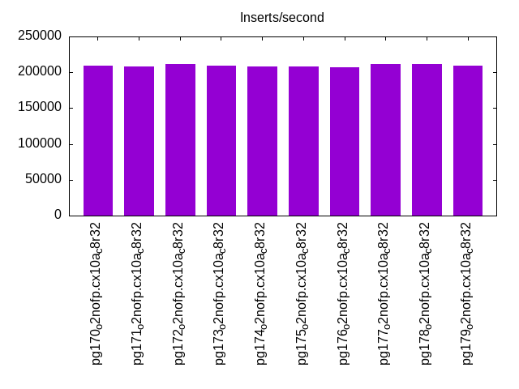
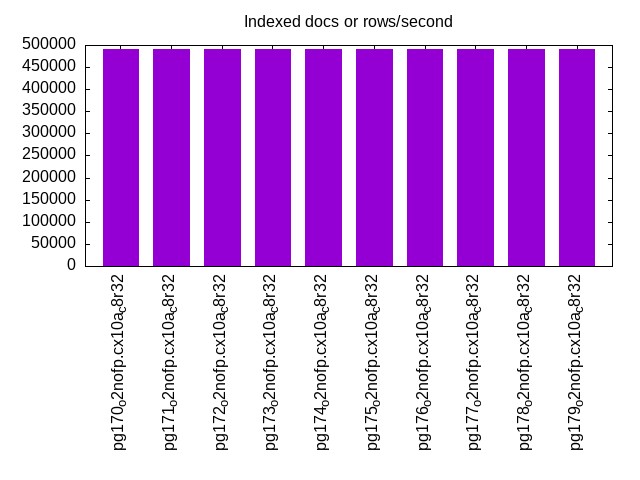
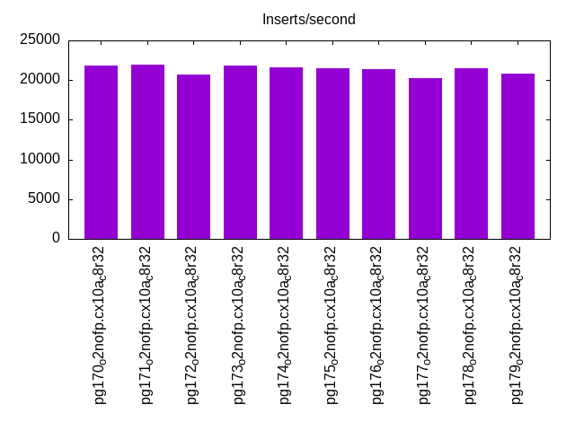
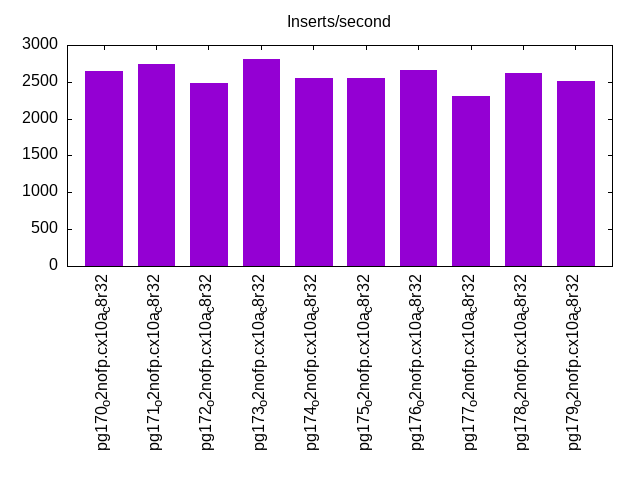
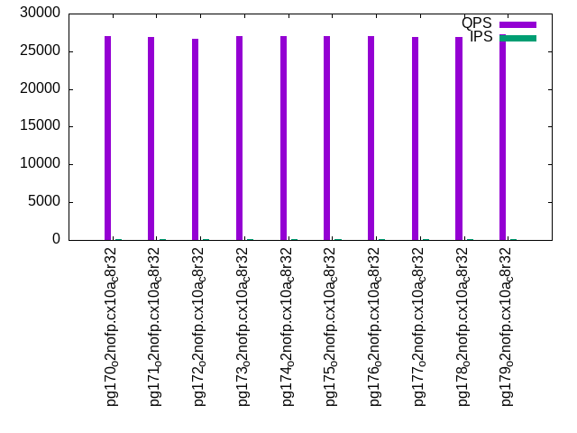
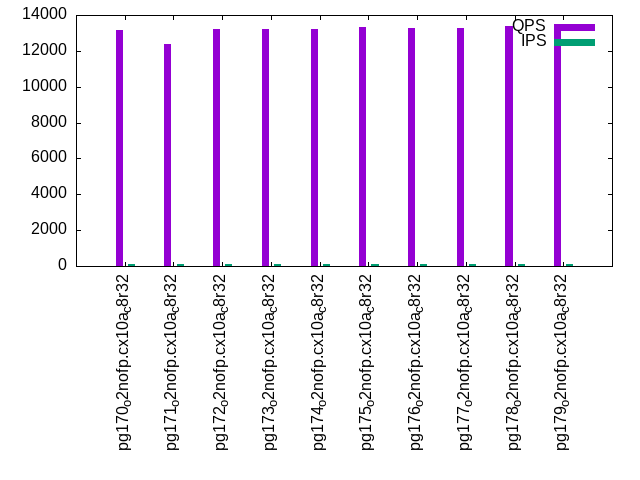
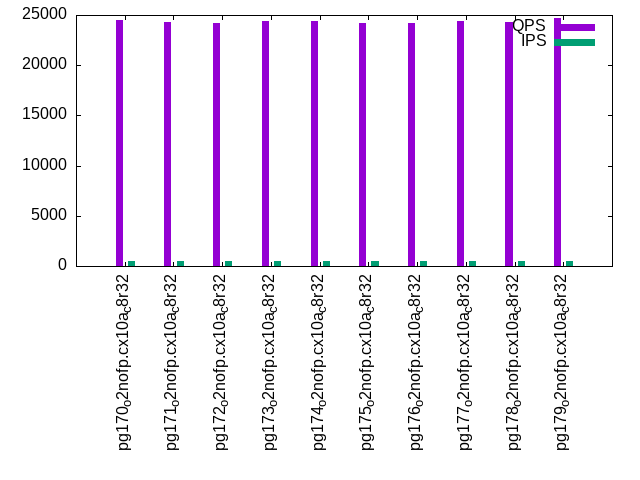
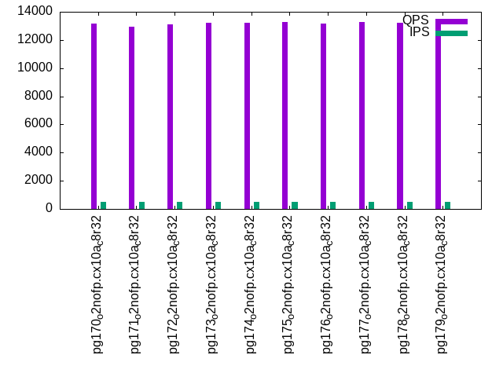
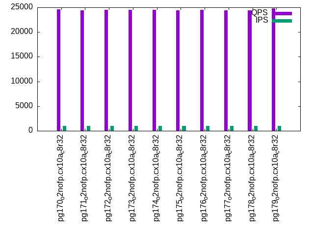
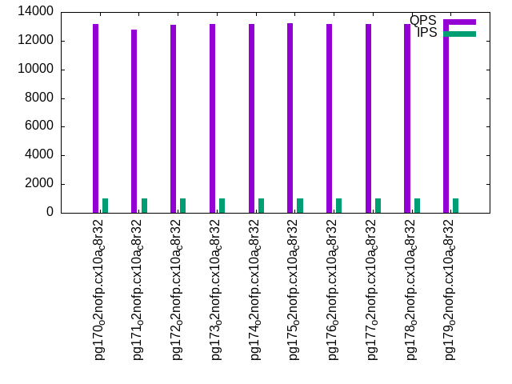

This is a report for the insert benchmark with 30M docs and 1 client(s). It is generated by scripts (bash, awk, sed) and Tufte might not be impressed. An overview of the insert benchmark is here and a short update is here. Below, by DBMS, I mean DBMS+version.config. An example is my8020.c10b40 where my means MySQL, 8020 is version 8.0.20 and c10b40 is the name for the configuration file.
The test server has 8 AMD cores, 32G RAM and an NVMe device for the database. The benchmark was run with 1 client and there were 1 or 3 connections per client (1 for queries or inserts without rate limits, 1+1 for rate limited inserts+deletes). It uses 1 table with a table per client. It loads 30M rows per table without secondary indexes, creates 3 secondary indexes per table, then inserts 40m+10m rows per table with a delete per insert to avoid growing the table. It then does 6 read+write tests for 1800s each that do queries as fast as possible with 100,100,500,500,1000,1000 inserts/s and the same for deletes/s per client concurrent with the queries. The database is cached by Postgres. Clients and the DBMS share one server.
The tested DBMS are:
The numbers are inserts/s for l.i0, l.i1 and l.i2, indexed docs (or rows) /s for l.x and queries/s for qr100, qp100 thru qr1000, qp1000" The values are the average rate over the entire test for inserts (IPS) and queries (QPS). The range of values for IPS and QPS is split into 3 parts: bottom 25%, middle 50%, top 25%. Values in the bottom 25% have a red background, values in the top 25% have a green background and values in the middle have no color. A gray background is used for values that can be ignored because the DBMS did not sustain the target insert rate. Red backgrounds are not used when the minimum value is within 80% of the max value.
| dbms | l.i0 | l.x | l.i1 | l.i2 | qr100 | qp100 | qr500 | qp500 | qr1000 | qp1000 |
|---|---|---|---|---|---|---|---|---|---|---|
| pg170_o2nofp.cx10a_c8r32 | 209790 | 491805 | 21870 | 2641 | 26985 | 13175 | 24473 | 13167 | 24609 | 13136 |
| pg171_o2nofp.cx10a_c8r32 | 208333 | 491805 | 21906 | 2737 | 26840 | 12360 | 24263 | 12948 | 24447 | 12798 |
| pg172_o2nofp.cx10a_c8r32 | 211268 | 491805 | 20672 | 2483 | 26705 | 13236 | 24179 | 13084 | 24454 | 13118 |
| pg173_o2nofp.cx10a_c8r32 | 209790 | 491805 | 21786 | 2814 | 26992 | 13205 | 24438 | 13231 | 24551 | 13184 |
| pg174_o2nofp.cx10a_c8r32 | 208333 | 491805 | 21598 | 2558 | 27061 | 13240 | 24426 | 13218 | 24462 | 13184 |
| pg175_o2nofp.cx10a_c8r32 | 208333 | 491805 | 21494 | 2556 | 27007 | 13303 | 24228 | 13285 | 24413 | 13195 |
| pg176_o2nofp.cx10a_c8r32 | 206896 | 491805 | 21425 | 2658 | 27057 | 13251 | 24218 | 13172 | 24501 | 13179 |
| pg177_o2nofp.cx10a_c8r32 | 211268 | 491805 | 20243 | 2305 | 26905 | 13249 | 24403 | 13248 | 24446 | 13136 |
| pg178_o2nofp.cx10a_c8r32 | 211268 | 491805 | 21505 | 2623 | 26914 | 13360 | 24326 | 13204 | 24359 | 13139 |
| pg179_o2nofp.cx10a_c8r32 | 209790 | 491805 | 20779 | 2509 | 27209 | 13206 | 24727 | 13115 | 24823 | 13204 |
This table has relative throughput, throughput for the DBMS relative to the DBMS in the first line, using the absolute throughput from the previous table. Values less than 0.95 have a yellow background. Values greater than 1.05 have a blue background.
| dbms | l.i0 | l.x | l.i1 | l.i2 | qr100 | qp100 | qr500 | qp500 | qr1000 | qp1000 |
|---|---|---|---|---|---|---|---|---|---|---|
| pg170_o2nofp.cx10a_c8r32 | 1.00 | 1.00 | 1.00 | 1.00 | 1.00 | 1.00 | 1.00 | 1.00 | 1.00 | 1.00 |
| pg171_o2nofp.cx10a_c8r32 | 0.99 | 1.00 | 1.00 | 1.04 | 0.99 | 0.94 | 0.99 | 0.98 | 0.99 | 0.97 |
| pg172_o2nofp.cx10a_c8r32 | 1.01 | 1.00 | 0.95 | 0.94 | 0.99 | 1.00 | 0.99 | 0.99 | 0.99 | 1.00 |
| pg173_o2nofp.cx10a_c8r32 | 1.00 | 1.00 | 1.00 | 1.07 | 1.00 | 1.00 | 1.00 | 1.00 | 1.00 | 1.00 |
| pg174_o2nofp.cx10a_c8r32 | 0.99 | 1.00 | 0.99 | 0.97 | 1.00 | 1.00 | 1.00 | 1.00 | 0.99 | 1.00 |
| pg175_o2nofp.cx10a_c8r32 | 0.99 | 1.00 | 0.98 | 0.97 | 1.00 | 1.01 | 0.99 | 1.01 | 0.99 | 1.00 |
| pg176_o2nofp.cx10a_c8r32 | 0.99 | 1.00 | 0.98 | 1.01 | 1.00 | 1.01 | 0.99 | 1.00 | 1.00 | 1.00 |
| pg177_o2nofp.cx10a_c8r32 | 1.01 | 1.00 | 0.93 | 0.87 | 1.00 | 1.01 | 1.00 | 1.01 | 0.99 | 1.00 |
| pg178_o2nofp.cx10a_c8r32 | 1.01 | 1.00 | 0.98 | 0.99 | 1.00 | 1.01 | 0.99 | 1.00 | 0.99 | 1.00 |
| pg179_o2nofp.cx10a_c8r32 | 1.00 | 1.00 | 0.95 | 0.95 | 1.01 | 1.00 | 1.01 | 1.00 | 1.01 | 1.01 |
This lists the average rate of inserts/s for the tests that do inserts concurrent with queries. For such tests the query rate is listed in the table above. The read+write tests are setup so that the insert rate should match the target rate every second. Cells that are not at least 95% of the target have a red background to indicate a failure to satisfy the target.
| dbms | qr100.L1 | qp100.L2 | qr500.L3 | qp500.L4 | qr1000.L5 | qp1000.L6 |
|---|---|---|---|---|---|---|
| pg170_o2nofp.cx10a_c8r32 | 100 | 100 | 500 | 499 | 999 | 999 |
| pg171_o2nofp.cx10a_c8r32 | 100 | 100 | 500 | 500 | 999 | 999 |
| pg172_o2nofp.cx10a_c8r32 | 100 | 100 | 500 | 500 | 999 | 999 |
| pg173_o2nofp.cx10a_c8r32 | 100 | 100 | 500 | 500 | 999 | 999 |
| pg174_o2nofp.cx10a_c8r32 | 100 | 100 | 500 | 500 | 999 | 999 |
| pg175_o2nofp.cx10a_c8r32 | 100 | 100 | 499 | 499 | 999 | 999 |
| pg176_o2nofp.cx10a_c8r32 | 100 | 100 | 499 | 499 | 999 | 999 |
| pg177_o2nofp.cx10a_c8r32 | 100 | 100 | 500 | 500 | 999 | 999 |
| pg178_o2nofp.cx10a_c8r32 | 100 | 100 | 499 | 499 | 999 | 999 |
| pg179_o2nofp.cx10a_c8r32 | 100 | 100 | 499 | 500 | 999 | 999 |
| target | 100 | 100 | 500 | 500 | 1000 | 1000 |
l.i0: load without secondary indexes. Graphs for performance per 1-second interval are here.
Average throughput:

Insert response time histogram: each cell has the percentage of responses that take <= the time in the header and max is the max response time in seconds. For the max column values in the top 25% of the range have a red background and in the bottom 25% of the range have a green background. The red background is not used when the min value is within 80% of the max value.
| dbms | 256us | 1ms | 4ms | 16ms | 64ms | 256ms | 1s | 4s | 16s | gt | max |
|---|---|---|---|---|---|---|---|---|---|---|---|
| pg170_o2nofp.cx10a_c8r32 | 99.987 | 0.013 | 0.003 | ||||||||
| pg171_o2nofp.cx10a_c8r32 | 99.988 | 0.012 | nonzero | 0.006 | |||||||
| pg172_o2nofp.cx10a_c8r32 | 99.988 | 0.011 | nonzero | 0.006 | |||||||
| pg173_o2nofp.cx10a_c8r32 | 99.992 | 0.008 | 0.002 | ||||||||
| pg174_o2nofp.cx10a_c8r32 | 99.994 | 0.006 | 0.002 | ||||||||
| pg175_o2nofp.cx10a_c8r32 | 99.984 | 0.016 | 0.004 | ||||||||
| pg176_o2nofp.cx10a_c8r32 | 99.988 | 0.012 | 0.002 | ||||||||
| pg177_o2nofp.cx10a_c8r32 | 99.993 | 0.007 | 0.002 | ||||||||
| pg178_o2nofp.cx10a_c8r32 | 99.990 | 0.010 | 0.003 | ||||||||
| pg179_o2nofp.cx10a_c8r32 | 99.990 | 0.010 | 0.003 |
Performance metrics for the DBMS listed above. Some are normalized by throughput, others are not. Legend for results is here.
ips qps rps rmbps wps wmbps rpq rkbpq wpi wkbpi csps cpups cspq cpupq dbgb1 dbgb2 rss maxop p50 p99 tag 209790 0 0 0.0 781.0 89.0 0.000 0.000 0.004 0.434 22162 19.4 0.106 7 2.9 7.8 2.4 0.003 210679 203187 pg170_o2nofp.cx10a_c8r32 208333 0 0 0.0 773.0 87.9 0.000 0.000 0.004 0.432 21782 19.4 0.105 7 2.9 7.8 2.4 0.006 208566 200369 pg171_o2nofp.cx10a_c8r32 211268 0 0 0.0 787.1 89.6 0.000 0.000 0.004 0.434 22157 19.8 0.105 7 2.9 7.8 1.8 0.006 212678 205147 pg172_o2nofp.cx10a_c8r32 209790 0 0 0.0 777.7 88.5 0.000 0.000 0.004 0.432 21843 19.3 0.104 7 2.9 7.8 2.4 0.002 209879 207172 pg173_o2nofp.cx10a_c8r32 208333 0 0 0.0 777.0 88.4 0.000 0.000 0.004 0.435 21824 19.4 0.105 7 2.9 7.8 2.4 0.002 209676 200779 pg174_o2nofp.cx10a_c8r32 208333 0 0 0.0 778.7 88.5 0.000 0.000 0.004 0.435 21775 19.4 0.105 7 2.9 7.8 2.4 0.004 209566 201178 pg175_o2nofp.cx10a_c8r32 206896 0 0 0.0 777.5 88.4 0.000 0.000 0.004 0.438 21734 19.5 0.105 8 2.9 7.8 2.4 0.002 209965 201077 pg176_o2nofp.cx10a_c8r32 211268 0 0 0.0 785.4 89.3 0.000 0.000 0.004 0.433 21925 19.4 0.104 7 2.9 7.8 2.4 0.002 211868 203367 pg177_o2nofp.cx10a_c8r32 211268 0 0 0.0 786.8 89.5 0.000 0.000 0.004 0.434 22218 19.4 0.105 7 2.9 7.8 2.4 0.003 212664 204274 pg178_o2nofp.cx10a_c8r32 209790 0 0 0.0 781.3 88.8 0.000 0.000 0.004 0.433 21920 19.5 0.104 7 2.9 7.8 2.4 0.003 210373 201867 pg179_o2nofp.cx10a_c8r32
Average values from iostat.
r/s rkB/s rrqm/s %rrqm r_await rareq-s w/s wkB/s wrqm/s %wrqm w_await wareq-s d/s dkB/s drqm/s %drqm d_await dareq-s f/s f_await aqu-sz %util 0.444 1.778 0.000 0.000 0.116 4.000 788.0 91999.0 36.99 4.952 0.450 115.6 0.067 0.800 0.000 0.000 0.213 1.667 43.30 1.673 0.430 12.13 pg170_o2nofp.cx10a_c8r32 0.437 1.748 0.000 0.000 0.113 4.000 779.7 90873.2 37.18 4.970 0.470 115.4 0.074 0.800 0.000 0.000 0.131 1.630 42.73 1.815 0.448 12.73 pg171_o2nofp.cx10a_c8r32 0.415 1.659 0.000 0.000 0.103 3.704 793.9 92589.9 38.00 4.965 0.440 115.4 0.096 0.977 0.000 0.000 0.210 1.630 43.64 1.689 0.430 12.39 pg172_o2nofp.cx10a_c8r32 0.363 1.452 0.000 0.000 0.097 3.852 784.3 91484.5 37.33 4.956 0.416 115.4 0.126 1.067 0.000 0.000 0.233 1.564 43.13 1.633 0.388 11.97 pg173_o2nofp.cx10a_c8r32 0.267 1.067 0.000 0.000 0.093 2.667 783.7 91388.4 37.31 4.956 0.428 115.4 0.081 1.007 0.000 0.000 0.219 1.756 43.18 1.656 0.417 12.05 pg174_o2nofp.cx10a_c8r32 0.311 1.244 0.000 0.000 0.083 4.000 785.6 91471.6 37.30 4.929 0.478 115.2 0.089 1.778 0.000 0.000 0.307 2.624 43.14 1.627 0.508 11.86 pg175_o2nofp.cx10a_c8r32 0.444 1.778 0.000 0.000 0.118 4.000 784.3 91424.2 37.63 5.007 0.411 115.3 0.089 0.978 0.000 0.000 0.189 1.689 43.17 1.719 0.390 12.36 pg176_o2nofp.cx10a_c8r32 0.444 1.778 0.000 0.000 0.072 4.000 792.3 92327.8 37.97 4.994 0.434 115.3 0.067 0.830 0.000 0.000 0.117 1.679 43.57 1.740 0.428 12.63 pg177_o2nofp.cx10a_c8r32 0.274 1.096 0.000 0.000 0.107 2.519 793.6 92575.4 37.57 4.913 0.471 115.4 0.096 1.126 0.000 0.000 0.250 1.988 43.55 1.755 0.486 12.64 pg178_o2nofp.cx10a_c8r32 0.393 1.570 0.000 0.000 0.169 3.852 788.0 91805.3 37.56 4.984 0.397 115.3 0.067 1.185 0.000 0.000 0.170 2.136 43.39 1.362 0.363 10.67 pg179_o2nofp.cx10a_c8r32
l.x: create secondary indexes.
Average throughput:

Performance metrics for the DBMS listed above. Some are normalized by throughput, others are not. Legend for results is here.
ips qps rps rmbps wps wmbps rpq rkbpq wpi wkbpi csps cpups cspq cpupq dbgb1 dbgb2 rss maxop p50 p99 tag 491805 0 1 0.0 999.2 122.7 0.000 0.000 0.002 0.255 2756 11.3 0.006 2 5.8 13.3 3.0 0.002 NA NA pg170_o2nofp.cx10a_c8r32 491805 0 1 0.0 1007.7 123.9 0.000 0.000 0.002 0.258 2721 11.4 0.006 2 5.8 13.3 3.0 0.002 NA NA pg171_o2nofp.cx10a_c8r32 491805 0 0 0.0 1007.5 123.8 0.000 0.000 0.002 0.258 2997 11.4 0.006 2 5.8 13.3 3.0 0.002 NA NA pg172_o2nofp.cx10a_c8r32 491805 0 1 0.0 1026.3 126.1 0.000 0.000 0.002 0.263 2764 11.2 0.006 2 5.8 13.3 3.0 0.002 NA NA pg173_o2nofp.cx10a_c8r32 491805 0 1 0.0 1073.9 132.0 0.000 0.000 0.002 0.275 2792 11.5 0.006 2 5.8 13.3 3.0 0.002 NA NA pg174_o2nofp.cx10a_c8r32 491805 0 0 0.0 1077.8 132.5 0.000 0.000 0.002 0.276 2856 11.5 0.006 2 5.8 13.3 3.0 0.001 NA NA pg175_o2nofp.cx10a_c8r32 491805 0 1 0.0 1065.2 131.0 0.000 0.000 0.002 0.273 2827 11.5 0.006 2 5.8 13.3 3.0 0.002 NA NA pg176_o2nofp.cx10a_c8r32 491805 0 1 0.0 1017.7 125.0 0.000 0.000 0.002 0.260 2849 11.5 0.006 2 5.8 13.3 3.0 0.001 NA NA pg177_o2nofp.cx10a_c8r32 491805 0 1 0.0 1011.7 124.2 0.000 0.000 0.002 0.259 2971 11.2 0.006 2 5.8 13.3 3.0 0.002 NA NA pg178_o2nofp.cx10a_c8r32 491805 0 1 0.0 997.7 122.5 0.000 0.000 0.002 0.255 2894 11.6 0.006 2 5.8 13.3 3.0 0.001 NA NA pg179_o2nofp.cx10a_c8r32
Average values from iostat.
r/s rkB/s rrqm/s %rrqm r_await rareq-s w/s wkB/s wrqm/s %wrqm w_await wareq-s d/s dkB/s drqm/s %drqm d_await dareq-s f/s f_await aqu-sz %util 0.745 2.982 0.000 0.000 0.059 2.545 1089.7 137054 36.82 14.32 1.661 105.1 0.418 3950.5 0.000 0.000 0.325 1412.2 12.20 1.785 0.954 7.451 pg170_o2nofp.cx10a_c8r32 0.727 2.909 0.000 0.000 0.119 2.545 1098.9 138371 35.20 19.61 2.296 94.95 0.382 6407.3 0.000 0.000 0.585 1885.6 11.87 1.746 1.135 6.709 pg171_o2nofp.cx10a_c8r32 0.564 2.255 0.000 0.000 0.076 2.545 1099.0 138295 36.56 11.27 1.669 103.0 0.382 3428.1 0.000 0.000 0.404 8565.5 12.33 1.892 0.930 7.564 pg172_o2nofp.cx10a_c8r32 0.745 2.982 0.000 0.000 0.076 2.182 1119.2 140848 35.76 19.03 2.385 95.17 0.600 8567.6 0.000 0.000 0.506 2142.6 12.02 2.215 1.129 7.355 pg173_o2nofp.cx10a_c8r32 0.691 2.764 0.000 0.000 0.100 2.545 1171.2 147476 37.09 18.44 2.286 93.97 0.727 12964.4 0.000 0.000 0.492 2947.7 12.35 2.245 1.165 7.727 pg174_o2nofp.cx10a_c8r32 0.291 1.164 0.000 0.000 0.023 1.818 1175.4 148031 37.27 18.23 2.407 94.12 0.582 12888.4 0.000 0.000 0.555 3393.3 12.40 2.379 1.345 7.636 pg175_o2nofp.cx10a_c8r32 0.800 3.200 0.000 0.000 0.092 2.545 1161.7 146311 37.20 18.37 2.305 94.16 0.545 10652.5 0.000 0.000 0.616 2804.1 12.45 2.194 1.146 7.693 pg176_o2nofp.cx10a_c8r32 0.745 2.982 0.000 0.000 0.062 2.909 1110.1 139607 37.35 10.24 1.685 103.5 0.509 3502.8 0.000 0.000 0.564 3501.8 12.56 2.020 0.965 7.547 pg177_o2nofp.cx10a_c8r32 0.655 2.618 0.000 0.000 0.088 2.909 1103.5 138749 36.29 12.34 1.736 104.4 0.327 3877.0 0.000 0.000 0.297 3231.6 12.44 1.797 0.904 7.289 pg178_o2nofp.cx10a_c8r32 0.727 2.909 0.000 0.000 0.109 2.909 1088.3 136883 35.80 11.50 1.714 104.4 0.291 4024.9 0.000 0.000 0.381 2875.5 12.25 2.115 0.905 7.565 pg179_o2nofp.cx10a_c8r32
l.i1: continue load after secondary indexes created with 50 inserts per transaction. Graphs for performance per 1-second interval are here.
Average throughput:

Insert response time histogram: each cell has the percentage of responses that take <= the time in the header and max is the max response time in seconds. For the max column values in the top 25% of the range have a red background and in the bottom 25% of the range have a green background. The red background is not used when the min value is within 80% of the max value.
| dbms | 256us | 1ms | 4ms | 16ms | 64ms | 256ms | 1s | 4s | 16s | gt | max |
|---|---|---|---|---|---|---|---|---|---|---|---|
| pg170_o2nofp.cx10a_c8r32 | 51.290 | 48.709 | 0.001 | 0.001 | 0.049 | ||||||
| pg171_o2nofp.cx10a_c8r32 | 50.374 | 49.625 | nonzero | 0.001 | 0.036 | ||||||
| pg172_o2nofp.cx10a_c8r32 | 57.941 | 42.057 | nonzero | 0.001 | 0.034 | ||||||
| pg173_o2nofp.cx10a_c8r32 | 51.384 | 48.615 | 0.001 | 0.001 | 0.036 | ||||||
| pg174_o2nofp.cx10a_c8r32 | 50.798 | 49.201 | nonzero | 0.001 | 0.039 | ||||||
| pg175_o2nofp.cx10a_c8r32 | 47.444 | 52.554 | 0.001 | 0.001 | 0.035 | ||||||
| pg176_o2nofp.cx10a_c8r32 | 49.453 | 50.545 | nonzero | 0.001 | 0.032 | ||||||
| pg177_o2nofp.cx10a_c8r32 | 57.524 | 42.474 | 0.001 | 0.001 | 0.030 | ||||||
| pg178_o2nofp.cx10a_c8r32 | 57.408 | 42.590 | 0.001 | 0.001 | 0.026 | ||||||
| pg179_o2nofp.cx10a_c8r32 | 55.229 | 44.770 | nonzero | 0.001 | 0.034 |
Delete response time histogram: each cell has the percentage of responses that take <= the time in the header and max is the max response time in seconds. For the max column values in the top 25% of the range have a red background and in the bottom 25% of the range have a green background. The red background is not used when the min value is within 80% of the max value.
| dbms | 256us | 1ms | 4ms | 16ms | 64ms | 256ms | 1s | 4s | 16s | gt | max |
|---|---|---|---|---|---|---|---|---|---|---|---|
| pg170_o2nofp.cx10a_c8r32 | 0.002 | 25.749 | 70.792 | 3.455 | 0.001 | 0.048 | |||||
| pg171_o2nofp.cx10a_c8r32 | 0.001 | 26.731 | 69.950 | 3.316 | 0.002 | 0.039 | |||||
| pg172_o2nofp.cx10a_c8r32 | 0.002 | 26.660 | 54.417 | 18.920 | 0.001 | 0.043 | |||||
| pg173_o2nofp.cx10a_c8r32 | 0.002 | 26.063 | 70.583 | 3.351 | 0.002 | 0.043 | |||||
| pg174_o2nofp.cx10a_c8r32 | 0.003 | 25.996 | 69.644 | 4.355 | 0.002 | 0.041 | |||||
| pg175_o2nofp.cx10a_c8r32 | 0.003 | 25.709 | 70.012 | 4.276 | 0.001 | 0.035 | |||||
| pg176_o2nofp.cx10a_c8r32 | 0.002 | 26.272 | 68.371 | 5.354 | 0.002 | 0.038 | |||||
| pg177_o2nofp.cx10a_c8r32 | 0.003 | 26.537 | 53.270 | 20.188 | 0.001 | 0.034 | |||||
| pg178_o2nofp.cx10a_c8r32 | 0.003 | 28.706 | 54.987 | 16.302 | 0.002 | 0.039 | |||||
| pg179_o2nofp.cx10a_c8r32 | 0.003 | 27.183 | 54.944 | 17.867 | 0.002 | 0.037 |
Performance metrics for the DBMS listed above. Some are normalized by throughput, others are not. Legend for results is here.
ips qps rps rmbps wps wmbps rpq rkbpq wpi wkbpi csps cpups cspq cpupq dbgb1 dbgb2 rss maxop p50 p99 tag 21870 0 0 0.0 262.2 29.6 0.000 0.000 0.012 1.386 8991 20.1 0.411 74 7.8 38.3 5.6 0.049 16697 11798 pg170_o2nofp.cx10a_c8r32 21906 0 0 0.0 262.7 29.7 0.000 0.000 0.012 1.386 9065 20.2 0.414 74 7.8 38.3 7.6 0.036 16598 11748 pg171_o2nofp.cx10a_c8r32 20672 0 0 0.0 247.7 28.0 0.000 0.000 0.012 1.385 8564 19.5 0.414 75 7.8 38.3 2.3 0.034 13498 7899 pg172_o2nofp.cx10a_c8r32 21786 0 0 0.0 261.2 29.5 0.000 0.000 0.012 1.386 9000 20.1 0.413 74 7.8 38.3 6.1 0.036 16398 11548 pg173_o2nofp.cx10a_c8r32 21598 0 0 0.0 258.8 29.2 0.000 0.000 0.012 1.385 8899 20.1 0.412 74 7.8 38.3 5.5 0.039 16397 11648 pg174_o2nofp.cx10a_c8r32 21494 0 0 0.0 257.6 29.1 0.000 0.000 0.012 1.385 8865 20.2 0.412 75 7.8 38.3 6.3 0.035 16397 11647 pg175_o2nofp.cx10a_c8r32 21425 0 0 0.0 256.9 29.0 0.000 0.000 0.012 1.386 8843 20.1 0.413 75 7.8 38.3 6.4 0.032 16048 11297 pg176_o2nofp.cx10a_c8r32 20243 0 0 0.0 242.9 27.4 0.000 0.000 0.012 1.386 8363 19.5 0.413 77 7.8 38.3 2.0 0.030 13348 7749 pg177_o2nofp.cx10a_c8r32 21505 0 0 0.0 257.7 29.1 0.000 0.000 0.012 1.386 8914 19.9 0.415 74 7.8 38.3 3.6 0.026 14048 9499 pg178_o2nofp.cx10a_c8r32 20779 0 0 0.0 249.3 28.1 0.000 0.000 0.012 1.386 8595 19.8 0.414 76 7.8 38.3 1.6 0.034 13698 9247 pg179_o2nofp.cx10a_c8r32
Average values from iostat.
r/s rkB/s rrqm/s %rrqm r_await rareq-s w/s wkB/s wrqm/s %wrqm w_await wareq-s d/s dkB/s drqm/s %drqm d_await dareq-s f/s f_await aqu-sz %util 0.121 0.484 0.000 0.000 0.051 1.868 261.8 30265.1 12.71 4.836 0.716 114.9 0.014 0.127 0.000 0.000 0.050 0.168 15.12 1.878 0.176 4.911 pg170_o2nofp.cx10a_c8r32 0.116 0.464 0.000 0.000 0.054 1.912 262.4 30333.3 12.24 4.602 0.701 114.9 0.012 0.081 0.000 0.000 0.029 0.140 15.17 1.867 0.178 4.851 pg171_o2nofp.cx10a_c8r32 0.105 0.419 0.000 0.000 0.085 1.772 247.4 28590.8 11.85 4.846 0.795 114.7 0.015 0.334 0.000 0.000 0.075 1.436 14.44 1.803 0.165 4.461 pg172_o2nofp.cx10a_c8r32 0.110 0.442 0.000 0.000 0.069 1.825 260.9 30175.6 12.56 4.740 0.708 114.9 0.011 5.217 0.000 0.000 0.033 25.74 15.09 1.745 0.173 4.697 pg173_o2nofp.cx10a_c8r32 0.089 0.356 0.000 0.000 0.046 1.507 258.4 29874.5 12.34 4.749 0.702 114.9 0.013 0.111 0.000 0.000 0.030 0.126 14.95 1.792 0.173 4.722 pg174_o2nofp.cx10a_c8r32 0.085 0.341 0.000 0.000 0.044 1.520 257.3 29735.5 12.26 4.806 0.708 114.9 0.015 0.140 0.000 0.000 0.032 0.179 14.88 1.764 0.173 4.662 pg175_o2nofp.cx10a_c8r32 0.116 0.462 0.000 0.000 0.049 1.796 256.5 29658.7 11.91 4.570 0.724 114.9 0.017 31.57 0.000 0.000 0.052 22.62 14.82 1.751 0.171 4.607 pg176_o2nofp.cx10a_c8r32 0.099 0.398 0.000 0.000 0.082 1.624 242.5 28007.6 11.76 4.846 0.815 114.6 0.012 9.726 0.000 0.000 0.035 16.33 14.15 1.722 0.166 4.356 pg177_o2nofp.cx10a_c8r32 0.092 0.367 0.000 0.000 0.044 1.456 257.4 29782.2 12.51 4.853 0.762 114.9 0.009 0.188 0.000 0.000 0.025 0.313 14.88 1.800 0.175 4.706 pg178_o2nofp.cx10a_c8r32 0.104 0.417 0.000 0.000 0.068 1.646 248.9 28763.2 11.50 4.616 0.766 114.7 0.013 21.47 0.000 0.000 0.033 27.00 14.49 1.575 0.163 4.182 pg179_o2nofp.cx10a_c8r32
l.i2: continue load after secondary indexes created with 5 inserts per transaction. Graphs for performance per 1-second interval are here.
Average throughput:

Insert response time histogram: each cell has the percentage of responses that take <= the time in the header and max is the max response time in seconds. For the max column values in the top 25% of the range have a red background and in the bottom 25% of the range have a green background. The red background is not used when the min value is within 80% of the max value.
| dbms | 256us | 1ms | 4ms | 16ms | 64ms | 256ms | 1s | 4s | 16s | gt | max |
|---|---|---|---|---|---|---|---|---|---|---|---|
| pg170_o2nofp.cx10a_c8r32 | 49.246 | 50.753 | 0.001 | 0.004 | |||||||
| pg171_o2nofp.cx10a_c8r32 | 52.115 | 47.884 | 0.001 | nonzero | 0.013 | ||||||
| pg172_o2nofp.cx10a_c8r32 | 49.241 | 50.758 | 0.001 | nonzero | nonzero | 0.023 | |||||
| pg173_o2nofp.cx10a_c8r32 | 56.452 | 43.547 | 0.001 | 0.003 | |||||||
| pg174_o2nofp.cx10a_c8r32 | 47.704 | 52.296 | 0.001 | nonzero | 0.008 | ||||||
| pg175_o2nofp.cx10a_c8r32 | 48.694 | 51.305 | 0.001 | nonzero | 0.014 | ||||||
| pg176_o2nofp.cx10a_c8r32 | 53.163 | 46.835 | 0.001 | nonzero | 0.013 | ||||||
| pg177_o2nofp.cx10a_c8r32 | 55.291 | 44.708 | 0.001 | 0.003 | |||||||
| pg178_o2nofp.cx10a_c8r32 | 50.667 | 49.332 | 0.001 | nonzero | 0.006 | ||||||
| pg179_o2nofp.cx10a_c8r32 | 44.147 | 55.853 | nonzero | 0.003 |
Delete response time histogram: each cell has the percentage of responses that take <= the time in the header and max is the max response time in seconds. For the max column values in the top 25% of the range have a red background and in the bottom 25% of the range have a green background. The red background is not used when the min value is within 80% of the max value.
| dbms | 256us | 1ms | 4ms | 16ms | 64ms | 256ms | 1s | 4s | 16s | gt | max |
|---|---|---|---|---|---|---|---|---|---|---|---|
| pg170_o2nofp.cx10a_c8r32 | 4.464 | 21.257 | 74.232 | 0.047 | nonzero | 0.019 | |||||
| pg171_o2nofp.cx10a_c8r32 | 4.551 | 24.037 | 71.363 | 0.049 | nonzero | 0.017 | |||||
| pg172_o2nofp.cx10a_c8r32 | 4.572 | 31.663 | 58.788 | 4.976 | nonzero | 0.023 | |||||
| pg173_o2nofp.cx10a_c8r32 | 4.546 | 18.229 | 77.180 | 0.044 | 0.009 | ||||||
| pg174_o2nofp.cx10a_c8r32 | 4.558 | 22.661 | 72.384 | 0.397 | 0.014 | ||||||
| pg175_o2nofp.cx10a_c8r32 | 3.888 | 17.853 | 78.202 | 0.058 | 0.014 | ||||||
| pg176_o2nofp.cx10a_c8r32 | 4.456 | 19.765 | 75.583 | 0.196 | 0.013 | ||||||
| pg177_o2nofp.cx10a_c8r32 | 4.530 | 32.706 | 44.473 | 18.291 | 0.013 | ||||||
| pg178_o2nofp.cx10a_c8r32 | 4.505 | 34.528 | 57.175 | 3.792 | 0.012 | ||||||
| pg179_o2nofp.cx10a_c8r32 | 4.576 | 27.340 | 66.904 | 1.179 | 0.007 |
Performance metrics for the DBMS listed above. Some are normalized by throughput, others are not. Legend for results is here.
ips qps rps rmbps wps wmbps rpq rkbpq wpi wkbpi csps cpups cspq cpupq dbgb1 dbgb2 rss maxop p50 p99 tag 2641 0 0 0.0 58.3 5.8 0.000 0.000 0.022 2.235 9956 15.2 3.770 461 7.9 40.2 2.8 0.004 1940 1345 pg170_o2nofp.cx10a_c8r32 2737 0 0 0.0 59.5 5.9 0.000 0.000 0.022 2.208 10338 15.3 3.776 447 7.9 40.3 0.4 0.013 1970 1360 pg171_o2nofp.cx10a_c8r32 2483 0 0 0.0 56.1 5.5 0.000 0.000 0.023 2.272 9348 15.0 3.765 483 7.9 39.9 0.2 0.023 1620 1035 pg172_o2nofp.cx10a_c8r32 2814 0 0 0.0 60.5 6.0 0.000 0.000 0.022 2.183 10635 15.2 3.779 432 7.9 40.2 8.0 0.003 2120 1370 pg173_o2nofp.cx10a_c8r32 2558 0 0 0.0 57.3 5.6 0.000 0.000 0.022 2.257 9620 15.3 3.762 479 7.9 40.1 0.2 0.008 1830 1255 pg174_o2nofp.cx10a_c8r32 2556 0 0 0.0 56.2 5.5 0.000 0.000 0.022 2.210 9602 15.2 3.756 476 7.9 39.8 6.5 0.014 1930 1340 pg175_o2nofp.cx10a_c8r32 2658 0 0 0.0 58.5 5.8 0.000 0.000 0.022 2.233 10029 15.1 3.773 454 7.9 40.2 0.2 0.013 1905 1275 pg176_o2nofp.cx10a_c8r32 2305 0 0 0.0 53.8 5.3 0.000 0.000 0.023 2.346 8671 14.9 3.761 517 7.9 40.0 0.3 0.003 1384 865 pg177_o2nofp.cx10a_c8r32 2623 0 0 0.0 58.1 5.7 0.000 0.000 0.022 2.241 9904 15.2 3.777 464 7.9 40.2 0.2 0.006 1715 1075 pg178_o2nofp.cx10a_c8r32 2509 0 0 0.0 55.8 5.5 0.000 0.000 0.022 2.234 9448 15.2 3.765 485 7.9 39.7 0.3 0.003 1780 1190 pg179_o2nofp.cx10a_c8r32
Average values from iostat.
r/s rkB/s rrqm/s %rrqm r_await rareq-s w/s wkB/s wrqm/s %wrqm w_await wareq-s d/s dkB/s drqm/s %drqm d_await dareq-s f/s f_await aqu-sz %util 0.004 0.016 0.000 0.000 0.005 0.074 58.32 5904.3 3.715 3.196 0.625 98.56 0.008 1.647 0.000 0.000 0.006 0.567 7.535 1.866 0.044 2.163 pg170_o2nofp.cx10a_c8r32 0.004 0.016 0.000 0.000 0.004 0.082 59.56 6049.3 3.657 2.804 0.611 98.86 0.007 1.650 0.000 0.000 0.004 0.690 7.631 1.835 0.043 2.085 pg171_o2nofp.cx10a_c8r32 0.003 0.013 0.000 0.000 0.006 0.065 56.15 5645.8 3.500 3.070 0.567 97.55 0.008 3.240 0.000 0.000 0.004 4.663 7.242 1.786 0.039 1.960 pg172_o2nofp.cx10a_c8r32 0.004 0.017 0.000 0.000 0.006 0.085 60.54 6146.3 3.929 3.199 0.584 99.11 0.008 1.783 0.000 0.000 0.004 0.580 7.709 1.750 0.042 2.111 pg173_o2nofp.cx10a_c8r32 0.004 0.015 0.000 0.000 0.009 0.077 57.35 5777.6 3.628 3.203 0.573 98.43 0.008 1.651 0.000 0.000 0.004 0.558 7.432 1.746 0.041 2.035 pg174_o2nofp.cx10a_c8r32 0.003 0.012 0.000 0.000 0.003 0.061 56.25 5653.6 3.547 3.018 0.559 99.31 0.008 1.733 0.000 0.000 0.005 0.587 7.386 1.742 0.040 1.979 pg175_o2nofp.cx10a_c8r32 0.005 0.020 0.000 0.000 0.006 0.091 58.49 5936.8 3.586 2.938 0.633 96.82 0.008 1.640 0.000 0.000 0.004 0.547 7.421 1.762 0.043 2.057 pg176_o2nofp.cx10a_c8r32 0.004 0.015 0.000 0.000 0.003 0.074 53.88 5412.7 3.334 3.164 0.550 97.72 0.006 1.441 0.000 0.000 0.003 0.571 7.109 1.730 0.037 1.856 pg177_o2nofp.cx10a_c8r32 0.004 0.016 0.000 0.000 0.007 0.079 58.17 5883.6 3.725 3.348 0.585 97.39 0.007 1.552 0.000 0.000 0.004 0.503 7.432 1.830 0.040 2.010 pg178_o2nofp.cx10a_c8r32 0.003 0.013 0.000 0.000 0.003 0.060 55.83 5609.1 3.372 2.736 0.523 98.69 0.008 1.705 0.000 0.000 0.003 0.541 7.355 1.571 0.037 1.804 pg179_o2nofp.cx10a_c8r32
qr100.L1: range queries with 100 insert/s per client. Graphs for performance per 1-second interval are here.
Average throughput:

Query response time histogram: each cell has the percentage of responses that take <= the time in the header and max is the max response time in seconds. For max values in the top 25% of the range have a red background and in the bottom 25% of the range have a green background. The red background is not used when the min value is within 80% of the max value.
| dbms | 256us | 1ms | 4ms | 16ms | 64ms | 256ms | 1s | 4s | 16s | gt | max |
|---|---|---|---|---|---|---|---|---|---|---|---|
| pg170_o2nofp.cx10a_c8r32 | 99.993 | 0.007 | nonzero | 0.002 | |||||||
| pg171_o2nofp.cx10a_c8r32 | 99.993 | 0.007 | 0.001 | ||||||||
| pg172_o2nofp.cx10a_c8r32 | 99.993 | 0.007 | nonzero | 0.003 | |||||||
| pg173_o2nofp.cx10a_c8r32 | 99.993 | 0.007 | nonzero | 0.001 | |||||||
| pg174_o2nofp.cx10a_c8r32 | 99.993 | 0.007 | 0.001 | ||||||||
| pg175_o2nofp.cx10a_c8r32 | 99.993 | 0.007 | nonzero | 0.001 | |||||||
| pg176_o2nofp.cx10a_c8r32 | 99.995 | 0.005 | nonzero | 0.001 | |||||||
| pg177_o2nofp.cx10a_c8r32 | 99.994 | 0.006 | nonzero | 0.001 | |||||||
| pg178_o2nofp.cx10a_c8r32 | 99.992 | 0.008 | 0.001 | ||||||||
| pg179_o2nofp.cx10a_c8r32 | 99.994 | 0.006 | nonzero | 0.003 |
Insert response time histogram: each cell has the percentage of responses that take <= the time in the header and max is the max response time in seconds. For max values in the top 25% of the range have a red background and in the bottom 25% of the range have a green background. The red background is not used when the min value is within 80% of the max value.
| dbms | 256us | 1ms | 4ms | 16ms | 64ms | 256ms | 1s | 4s | 16s | gt | max |
|---|---|---|---|---|---|---|---|---|---|---|---|
| pg170_o2nofp.cx10a_c8r32 | 20.056 | 79.917 | 0.028 | 0.005 | |||||||
| pg171_o2nofp.cx10a_c8r32 | 23.861 | 76.111 | 0.028 | 0.005 | |||||||
| pg172_o2nofp.cx10a_c8r32 | 22.000 | 77.972 | 0.028 | 0.005 | |||||||
| pg173_o2nofp.cx10a_c8r32 | 22.917 | 77.056 | 0.028 | 0.005 | |||||||
| pg174_o2nofp.cx10a_c8r32 | 20.944 | 79.028 | 0.028 | 0.005 | |||||||
| pg175_o2nofp.cx10a_c8r32 | 19.694 | 80.278 | 0.028 | 0.005 | |||||||
| pg176_o2nofp.cx10a_c8r32 | 18.417 | 81.556 | 0.028 | 0.005 | |||||||
| pg177_o2nofp.cx10a_c8r32 | 22.806 | 77.167 | 0.028 | 0.005 | |||||||
| pg178_o2nofp.cx10a_c8r32 | 21.472 | 78.500 | 0.028 | 0.005 | |||||||
| pg179_o2nofp.cx10a_c8r32 | 22.306 | 77.667 | 0.028 | 0.005 |
Delete response time histogram: each cell has the percentage of responses that take <= the time in the header and max is the max response time in seconds. For max values in the top 25% of the range have a red background and in the bottom 25% of the range have a green background. The red background is not used when the min value is within 80% of the max value.
| dbms | 256us | 1ms | 4ms | 16ms | 64ms | 256ms | 1s | 4s | 16s | gt | max |
|---|---|---|---|---|---|---|---|---|---|---|---|
| pg170_o2nofp.cx10a_c8r32 | 0.056 | 62.861 | 37.083 | 0.002 | |||||||
| pg171_o2nofp.cx10a_c8r32 | 0.056 | 65.972 | 33.972 | 0.002 | |||||||
| pg172_o2nofp.cx10a_c8r32 | 0.028 | 65.472 | 34.500 | 0.002 | |||||||
| pg173_o2nofp.cx10a_c8r32 | 65.361 | 34.639 | 0.002 | ||||||||
| pg174_o2nofp.cx10a_c8r32 | 64.750 | 35.250 | 0.002 | ||||||||
| pg175_o2nofp.cx10a_c8r32 | 63.361 | 36.639 | 0.002 | ||||||||
| pg176_o2nofp.cx10a_c8r32 | 0.028 | 61.833 | 38.139 | 0.002 | |||||||
| pg177_o2nofp.cx10a_c8r32 | 65.861 | 34.139 | 0.002 | ||||||||
| pg178_o2nofp.cx10a_c8r32 | 63.694 | 36.306 | 0.002 | ||||||||
| pg179_o2nofp.cx10a_c8r32 | 63.750 | 36.250 | 0.002 |
Performance metrics for the DBMS listed above. Some are normalized by throughput, others are not. Legend for results is here.
ips qps rps rmbps wps wmbps rpq rkbpq wpi wkbpi csps cpups cspq cpupq dbgb1 dbgb2 rss maxop p50 p99 tag 100 26985 0 0.0 12.2 0.8 0.000 0.000 0.123 7.722 102956 8.5 3.815 25 7.9 40.2 0.1 0.002 26987 26599 pg170_o2nofp.cx10a_c8r32 100 26840 0 0.0 12.1 0.8 0.000 0.000 0.122 7.717 102405 8.5 3.815 25 7.9 40.2 0.1 0.001 26855 26396 pg171_o2nofp.cx10a_c8r32 100 26705 0 0.0 12.2 0.8 0.000 0.000 0.122 7.726 101943 8.5 3.817 25 7.9 39.9 0.1 0.003 26733 26251 pg172_o2nofp.cx10a_c8r32 100 26992 0 0.0 12.1 0.8 0.000 0.000 0.121 7.712 102981 8.7 3.815 26 7.9 40.2 0.1 0.001 27000 26619 pg173_o2nofp.cx10a_c8r32 100 27061 0 0.0 12.2 0.8 0.000 0.000 0.122 7.725 103300 8.0 3.817 24 7.9 40.1 0.1 0.001 27068 26699 pg174_o2nofp.cx10a_c8r32 100 27007 0 0.0 12.2 0.8 0.000 0.000 0.122 7.702 103093 8.7 3.817 26 7.9 39.8 0.1 0.001 27020 26563 pg175_o2nofp.cx10a_c8r32 100 27057 0 0.0 12.2 0.8 0.000 0.000 0.122 7.724 103232 8.7 3.815 26 7.9 40.2 0.1 0.001 27083 26509 pg176_o2nofp.cx10a_c8r32 100 26905 0 0.0 12.3 0.8 0.000 0.000 0.123 7.753 102652 8.0 3.815 24 7.9 40.0 0.1 0.001 26907 26523 pg177_o2nofp.cx10a_c8r32 100 26914 0 0.0 12.2 0.8 0.000 0.000 0.122 7.718 102742 8.5 3.817 25 7.9 40.2 0.1 0.001 26939 26507 pg178_o2nofp.cx10a_c8r32 100 27209 0 0.0 12.2 0.8 0.000 0.000 0.123 7.737 103865 8.3 3.817 24 7.9 39.7 0.1 0.003 27241 26817 pg179_o2nofp.cx10a_c8r32
Average values from iostat.
r/s rkB/s rrqm/s %rrqm r_await rareq-s w/s wkB/s wrqm/s %wrqm w_await wareq-s d/s dkB/s drqm/s %drqm d_await dareq-s f/s f_await aqu-sz %util 0.000 0.000 0.000 0.000 0.000 0.000 12.23 769.5 0.249 2.139 2.139 66.27 0.001 0.002 0.000 0.000 0.003 0.011 2.764 2.483 0.031 1.275 pg170_o2nofp.cx10a_c8r32 0.000 0.000 0.000 0.000 0.000 0.000 12.12 769.1 0.248 2.139 2.110 66.78 0.001 0.002 0.000 0.000 0.003 0.011 2.741 2.430 0.030 1.252 pg171_o2nofp.cx10a_c8r32 0.000 0.000 0.000 0.000 0.000 0.000 12.14 769.1 0.250 2.176 2.122 66.58 0.001 0.002 0.000 0.000 0.000 0.011 2.731 2.472 0.031 1.259 pg172_o2nofp.cx10a_c8r32 0.000 0.000 0.000 0.000 0.000 0.000 12.09 768.5 0.247 2.150 2.074 66.50 0.001 0.002 0.000 0.000 0.003 0.011 2.752 2.335 0.030 1.221 pg173_o2nofp.cx10a_c8r32 0.000 0.000 0.000 0.000 0.000 0.000 12.18 769.1 0.247 2.136 2.056 66.46 0.001 0.002 0.000 0.000 0.003 0.011 2.758 2.297 0.030 1.220 pg174_o2nofp.cx10a_c8r32 0.000 0.000 0.000 0.000 0.000 0.000 12.17 766.8 0.250 2.162 2.087 66.13 0.001 0.002 0.000 0.000 0.006 0.011 2.778 2.378 0.031 1.284 pg175_o2nofp.cx10a_c8r32 0.001 0.002 0.000 0.000 0.000 0.011 12.17 769.7 0.247 2.137 2.107 66.30 0.001 0.002 0.000 0.000 0.000 0.011 2.764 2.412 0.031 1.254 pg176_o2nofp.cx10a_c8r32 0.000 0.000 0.000 0.000 0.000 0.000 12.23 772.7 0.251 2.166 2.065 66.42 0.001 0.002 0.000 0.000 0.003 0.011 2.758 2.272 0.030 1.224 pg177_o2nofp.cx10a_c8r32 0.000 0.000 0.000 0.000 0.000 0.000 12.16 768.3 0.252 2.188 2.090 66.14 0.001 0.002 0.000 0.000 0.003 0.011 2.770 2.382 0.031 1.316 pg178_o2nofp.cx10a_c8r32 0.000 0.000 0.000 0.000 0.000 0.000 12.23 770.1 0.249 2.160 1.973 66.53 0.001 0.002 0.000 0.000 0.006 0.011 2.738 2.005 0.028 1.141 pg179_o2nofp.cx10a_c8r32
qp100.L2: point queries with 100 insert/s per client. Graphs for performance per 1-second interval are here.
Average throughput:

Query response time histogram: each cell has the percentage of responses that take <= the time in the header and max is the max response time in seconds. For max values in the top 25% of the range have a red background and in the bottom 25% of the range have a green background. The red background is not used when the min value is within 80% of the max value.
| dbms | 256us | 1ms | 4ms | 16ms | 64ms | 256ms | 1s | 4s | 16s | gt | max |
|---|---|---|---|---|---|---|---|---|---|---|---|
| pg170_o2nofp.cx10a_c8r32 | 99.982 | 0.018 | nonzero | 0.002 | |||||||
| pg171_o2nofp.cx10a_c8r32 | 99.982 | 0.018 | nonzero | 0.002 | |||||||
| pg172_o2nofp.cx10a_c8r32 | 99.984 | 0.016 | 0.001 | ||||||||
| pg173_o2nofp.cx10a_c8r32 | 99.984 | 0.016 | 0.001 | ||||||||
| pg174_o2nofp.cx10a_c8r32 | 99.983 | 0.017 | 0.001 | ||||||||
| pg175_o2nofp.cx10a_c8r32 | 99.983 | 0.017 | nonzero | 0.001 | |||||||
| pg176_o2nofp.cx10a_c8r32 | 99.985 | 0.014 | nonzero | 0.001 | |||||||
| pg177_o2nofp.cx10a_c8r32 | 99.984 | 0.016 | nonzero | 0.001 | |||||||
| pg178_o2nofp.cx10a_c8r32 | 99.983 | 0.017 | 0.001 | ||||||||
| pg179_o2nofp.cx10a_c8r32 | 99.987 | 0.013 | nonzero | 0.002 |
Insert response time histogram: each cell has the percentage of responses that take <= the time in the header and max is the max response time in seconds. For max values in the top 25% of the range have a red background and in the bottom 25% of the range have a green background. The red background is not used when the min value is within 80% of the max value.
| dbms | 256us | 1ms | 4ms | 16ms | 64ms | 256ms | 1s | 4s | 16s | gt | max |
|---|---|---|---|---|---|---|---|---|---|---|---|
| pg170_o2nofp.cx10a_c8r32 | 2.167 | 97.806 | 0.028 | 0.004 | |||||||
| pg171_o2nofp.cx10a_c8r32 | 2.306 | 97.667 | 0.028 | 0.005 | |||||||
| pg172_o2nofp.cx10a_c8r32 | 2.556 | 97.417 | 0.028 | 0.005 | |||||||
| pg173_o2nofp.cx10a_c8r32 | 2.861 | 97.111 | 0.028 | 0.005 | |||||||
| pg174_o2nofp.cx10a_c8r32 | 2.806 | 97.167 | 0.028 | 0.005 | |||||||
| pg175_o2nofp.cx10a_c8r32 | 2.278 | 97.694 | 0.028 | 0.005 | |||||||
| pg176_o2nofp.cx10a_c8r32 | 2.528 | 97.444 | 0.028 | 0.005 | |||||||
| pg177_o2nofp.cx10a_c8r32 | 3.722 | 96.250 | 0.028 | 0.005 | |||||||
| pg178_o2nofp.cx10a_c8r32 | 2.222 | 97.750 | 0.028 | 0.005 | |||||||
| pg179_o2nofp.cx10a_c8r32 | 1.917 | 98.056 | 0.028 | 0.005 |
Delete response time histogram: each cell has the percentage of responses that take <= the time in the header and max is the max response time in seconds. For max values in the top 25% of the range have a red background and in the bottom 25% of the range have a green background. The red background is not used when the min value is within 80% of the max value.
| dbms | 256us | 1ms | 4ms | 16ms | 64ms | 256ms | 1s | 4s | 16s | gt | max |
|---|---|---|---|---|---|---|---|---|---|---|---|
| pg170_o2nofp.cx10a_c8r32 | 10.111 | 89.889 | 0.003 | ||||||||
| pg171_o2nofp.cx10a_c8r32 | 11.444 | 88.556 | 0.004 | ||||||||
| pg172_o2nofp.cx10a_c8r32 | 25.417 | 74.583 | 0.004 | ||||||||
| pg173_o2nofp.cx10a_c8r32 | 8.056 | 91.944 | 0.004 | ||||||||
| pg174_o2nofp.cx10a_c8r32 | 9.194 | 90.806 | 0.004 | ||||||||
| pg175_o2nofp.cx10a_c8r32 | 7.306 | 92.694 | 0.004 | ||||||||
| pg176_o2nofp.cx10a_c8r32 | 6.556 | 93.417 | 0.028 | 0.004 | |||||||
| pg177_o2nofp.cx10a_c8r32 | 8.639 | 91.361 | 0.004 | ||||||||
| pg178_o2nofp.cx10a_c8r32 | 12.722 | 87.278 | 0.004 | ||||||||
| pg179_o2nofp.cx10a_c8r32 | 16.444 | 83.556 | 0.004 |
Performance metrics for the DBMS listed above. Some are normalized by throughput, others are not. Legend for results is here.
ips qps rps rmbps wps wmbps rpq rkbpq wpi wkbpi csps cpups cspq cpupq dbgb1 dbgb2 rss maxop p50 p99 tag 100 13175 0 0.0 58.9 1.6 0.000 0.000 0.590 16.797 50844 10.0 3.859 61 7.9 40.2 0.1 0.002 13178 13083 pg170_o2nofp.cx10a_c8r32 100 12360 0 0.0 58.8 1.6 0.000 0.000 0.588 16.802 47709 10.3 3.860 67 7.9 40.2 0.1 0.002 12366 12267 pg171_o2nofp.cx10a_c8r32 100 13236 0 0.0 59.0 1.6 0.000 0.000 0.590 16.790 51081 9.9 3.859 60 7.9 39.9 0.1 0.001 13246 13130 pg172_o2nofp.cx10a_c8r32 100 13205 0 0.0 58.9 1.6 0.000 0.000 0.590 16.795 50961 10.1 3.859 61 7.9 40.2 0.9 0.001 13198 13115 pg173_o2nofp.cx10a_c8r32 100 13240 0 0.0 58.7 1.6 0.000 0.000 0.588 16.792 51122 9.9 3.861 60 7.9 40.1 0.1 0.001 13246 13145 pg174_o2nofp.cx10a_c8r32 100 13303 0 0.0 59.0 1.6 0.000 0.000 0.591 16.865 51371 9.9 3.862 60 7.9 39.8 0.1 0.001 13310 13199 pg175_o2nofp.cx10a_c8r32 100 13251 0 0.0 58.7 1.6 0.000 0.000 0.587 16.794 51139 10.2 3.859 62 7.9 40.2 0.1 0.001 13261 13150 pg176_o2nofp.cx10a_c8r32 100 13249 0 0.0 58.7 1.6 0.000 0.000 0.588 16.782 51138 9.8 3.860 59 7.9 40.0 1.6 0.001 13246 13086 pg177_o2nofp.cx10a_c8r32 100 13360 0 0.0 58.8 1.6 0.000 0.000 0.589 16.802 51587 9.7 3.861 58 7.9 40.2 0.1 0.001 13374 13262 pg178_o2nofp.cx10a_c8r32 100 13206 0 0.0 59.0 1.6 0.000 0.000 0.591 16.790 50995 10.1 3.861 61 7.9 39.7 0.1 0.002 13214 13102 pg179_o2nofp.cx10a_c8r32
Average values from iostat.
r/s rkB/s rrqm/s %rrqm r_await rareq-s w/s wkB/s wrqm/s %wrqm w_await wareq-s d/s dkB/s drqm/s %drqm d_await dareq-s f/s f_await aqu-sz %util 0.000 0.000 0.000 0.000 0.000 0.000 58.84 1670.5 0.636 1.293 1.436 32.57 0.001 0.002 0.000 0.000 0.003 0.011 2.583 2.118 0.085 1.513 pg170_o2nofp.cx10a_c8r32 0.000 0.000 0.000 0.000 0.000 0.000 58.68 1671.0 0.665 1.443 1.423 32.35 0.003 45.64 0.000 0.000 0.004 45.65 2.600 2.051 0.085 1.503 pg171_o2nofp.cx10a_c8r32 0.001 0.002 0.000 0.000 0.000 0.011 58.92 1669.8 0.640 1.293 1.439 32.29 0.001 0.002 0.000 0.000 0.003 0.011 2.605 1.989 0.085 1.477 pg172_o2nofp.cx10a_c8r32 0.000 0.000 0.000 0.000 0.000 0.000 58.83 1670.3 0.646 1.340 1.420 32.40 0.003 36.51 0.000 0.000 0.002 45.65 2.604 1.970 0.085 1.491 pg173_o2nofp.cx10a_c8r32 0.000 0.000 0.000 0.000 0.000 0.000 58.64 1668.3 0.655 1.386 1.432 32.57 0.001 0.002 0.000 0.000 0.003 0.011 2.598 2.000 0.085 1.472 pg174_o2nofp.cx10a_c8r32 0.000 0.000 0.000 0.000 0.000 0.000 58.94 1675.6 0.997 2.360 1.419 32.90 0.001 0.002 0.000 0.000 0.000 0.011 2.563 2.000 0.085 1.468 pg175_o2nofp.cx10a_c8r32 0.000 0.000 0.000 0.000 0.000 0.000 58.60 1670.2 0.660 1.429 1.424 32.52 0.003 36.51 0.000 0.000 0.006 45.65 2.590 1.992 0.084 1.502 pg176_o2nofp.cx10a_c8r32 0.000 0.000 0.000 0.000 0.000 0.000 58.64 1668.8 0.641 1.285 1.426 32.71 0.001 0.002 0.000 0.000 0.000 0.011 2.579 1.926 0.085 1.461 pg177_o2nofp.cx10a_c8r32 0.000 0.000 0.000 0.000 0.000 0.000 58.76 1669.1 0.643 1.400 1.427 32.40 0.001 0.002 0.000 0.000 0.003 0.011 2.604 2.047 0.085 1.502 pg178_o2nofp.cx10a_c8r32 0.000 0.000 0.000 0.000 0.000 0.000 58.91 1667.9 0.639 1.268 1.410 32.42 0.001 0.002 0.000 0.000 0.003 0.011 2.589 1.770 0.085 1.440 pg179_o2nofp.cx10a_c8r32
qr500.L3: range queries with 500 insert/s per client. Graphs for performance per 1-second interval are here.
Average throughput:

Query response time histogram: each cell has the percentage of responses that take <= the time in the header and max is the max response time in seconds. For max values in the top 25% of the range have a red background and in the bottom 25% of the range have a green background. The red background is not used when the min value is within 80% of the max value.
| dbms | 256us | 1ms | 4ms | 16ms | 64ms | 256ms | 1s | 4s | 16s | gt | max |
|---|---|---|---|---|---|---|---|---|---|---|---|
| pg170_o2nofp.cx10a_c8r32 | 99.990 | 0.010 | nonzero | nonzero | 0.004 | ||||||
| pg171_o2nofp.cx10a_c8r32 | 99.990 | 0.010 | nonzero | 0.002 | |||||||
| pg172_o2nofp.cx10a_c8r32 | 99.990 | 0.010 | nonzero | 0.002 | |||||||
| pg173_o2nofp.cx10a_c8r32 | 99.990 | 0.010 | nonzero | 0.002 | |||||||
| pg174_o2nofp.cx10a_c8r32 | 99.989 | 0.011 | nonzero | 0.001 | |||||||
| pg175_o2nofp.cx10a_c8r32 | 99.990 | 0.010 | nonzero | 0.002 | |||||||
| pg176_o2nofp.cx10a_c8r32 | 99.991 | 0.009 | nonzero | 0.002 | |||||||
| pg177_o2nofp.cx10a_c8r32 | 99.990 | 0.010 | nonzero | 0.002 | |||||||
| pg178_o2nofp.cx10a_c8r32 | 99.990 | 0.010 | nonzero | 0.002 | |||||||
| pg179_o2nofp.cx10a_c8r32 | 99.992 | 0.008 | nonzero | 0.002 |
Insert response time histogram: each cell has the percentage of responses that take <= the time in the header and max is the max response time in seconds. For max values in the top 25% of the range have a red background and in the bottom 25% of the range have a green background. The red background is not used when the min value is within 80% of the max value.
| dbms | 256us | 1ms | 4ms | 16ms | 64ms | 256ms | 1s | 4s | 16s | gt | max |
|---|---|---|---|---|---|---|---|---|---|---|---|
| pg170_o2nofp.cx10a_c8r32 | 74.494 | 25.500 | 0.006 | 0.004 | |||||||
| pg171_o2nofp.cx10a_c8r32 | 73.328 | 26.667 | 0.006 | 0.004 | |||||||
| pg172_o2nofp.cx10a_c8r32 | 75.583 | 24.411 | 0.006 | 0.005 | |||||||
| pg173_o2nofp.cx10a_c8r32 | 74.422 | 25.572 | 0.006 | 0.004 | |||||||
| pg174_o2nofp.cx10a_c8r32 | 72.533 | 27.461 | 0.006 | 0.005 | |||||||
| pg175_o2nofp.cx10a_c8r32 | 68.828 | 31.161 | 0.011 | 0.004 | |||||||
| pg176_o2nofp.cx10a_c8r32 | 72.494 | 27.500 | 0.006 | 0.005 | |||||||
| pg177_o2nofp.cx10a_c8r32 | 75.317 | 24.678 | 0.006 | 0.004 | |||||||
| pg178_o2nofp.cx10a_c8r32 | 74.961 | 25.033 | 0.006 | 0.004 | |||||||
| pg179_o2nofp.cx10a_c8r32 | 74.922 | 25.072 | 0.006 | 0.005 |
Delete response time histogram: each cell has the percentage of responses that take <= the time in the header and max is the max response time in seconds. For max values in the top 25% of the range have a red background and in the bottom 25% of the range have a green background. The red background is not used when the min value is within 80% of the max value.
| dbms | 256us | 1ms | 4ms | 16ms | 64ms | 256ms | 1s | 4s | 16s | gt | max |
|---|---|---|---|---|---|---|---|---|---|---|---|
| pg170_o2nofp.cx10a_c8r32 | 2.472 | 94.256 | 3.272 | 0.005 | |||||||
| pg171_o2nofp.cx10a_c8r32 | 1.744 | 95.317 | 2.939 | 0.005 | |||||||
| pg172_o2nofp.cx10a_c8r32 | 3.328 | 94.111 | 2.561 | 0.005 | |||||||
| pg173_o2nofp.cx10a_c8r32 | 2.117 | 94.706 | 3.178 | 0.005 | |||||||
| pg174_o2nofp.cx10a_c8r32 | 1.600 | 95.306 | 3.094 | 0.005 | |||||||
| pg175_o2nofp.cx10a_c8r32 | 1.328 | 95.917 | 2.756 | 0.005 | |||||||
| pg176_o2nofp.cx10a_c8r32 | 1.200 | 95.972 | 2.828 | 0.007 | |||||||
| pg177_o2nofp.cx10a_c8r32 | 1.811 | 94.683 | 3.506 | 0.005 | |||||||
| pg178_o2nofp.cx10a_c8r32 | 2.967 | 94.139 | 2.894 | 0.005 | |||||||
| pg179_o2nofp.cx10a_c8r32 | 4.783 | 92.083 | 3.133 | 0.005 |
Performance metrics for the DBMS listed above. Some are normalized by throughput, others are not. Legend for results is here.
ips qps rps rmbps wps wmbps rpq rkbpq wpi wkbpi csps cpups cspq cpupq dbgb1 dbgb2 rss maxop p50 p99 tag 500 24473 0 0.0 66.8 2.2 0.000 0.000 0.134 4.597 93510 9.5 3.821 31 7.9 39.0 0.3 0.004 24451 23004 pg170_o2nofp.cx10a_c8r32 500 24263 0 0.0 66.7 2.2 0.000 0.000 0.134 4.597 92708 9.4 3.821 31 7.9 39.0 0.3 0.002 24236 22732 pg171_o2nofp.cx10a_c8r32 500 24179 0 0.0 66.9 2.2 0.000 0.000 0.134 4.590 92390 9.2 3.821 30 7.9 38.8 0.3 0.002 24188 22652 pg172_o2nofp.cx10a_c8r32 500 24438 0 0.0 66.8 2.2 0.000 0.000 0.134 4.590 93421 9.5 3.823 31 7.9 39.0 0.3 0.002 24444 22887 pg173_o2nofp.cx10a_c8r32 500 24426 0 0.0 66.8 2.2 0.000 0.000 0.134 4.592 93328 9.1 3.821 30 7.9 39.0 0.3 0.001 24428 22860 pg174_o2nofp.cx10a_c8r32 499 24228 0 0.0 67.1 2.3 0.000 0.000 0.134 4.685 92633 9.4 3.823 31 8.0 38.7 0.4 0.002 24252 22717 pg175_o2nofp.cx10a_c8r32 499 24218 0 0.0 66.5 2.3 0.000 0.000 0.133 4.626 92589 9.4 3.823 31 7.9 39.0 0.3 0.002 24210 22680 pg176_o2nofp.cx10a_c8r32 500 24403 0 0.0 66.9 2.3 0.000 0.000 0.134 4.617 93537 9.6 3.833 31 7.9 38.8 0.3 0.002 24430 22300 pg177_o2nofp.cx10a_c8r32 499 24326 0 0.0 66.7 2.2 0.000 0.000 0.134 4.599 92998 9.1 3.823 30 7.9 39.0 0.3 0.002 24331 22797 pg178_o2nofp.cx10a_c8r32 499 24727 0 0.0 66.8 2.2 0.000 0.000 0.134 4.599 94527 9.1 3.823 29 7.9 38.6 0.3 0.002 24779 23210 pg179_o2nofp.cx10a_c8r32
Average values from iostat.
r/s rkB/s rrqm/s %rrqm r_await rareq-s w/s wkB/s wrqm/s %wrqm w_await wareq-s d/s dkB/s drqm/s %drqm d_await dareq-s f/s f_await aqu-sz %util 0.003 0.013 0.000 0.000 0.000 0.011 66.68 2283.4 1.238 2.155 1.250 35.85 0.047 684.6 0.000 0.000 0.004 41.25 3.720 2.133 0.085 1.726 pg170_o2nofp.cx10a_c8r32 0.002 0.007 0.000 0.000 0.000 0.011 66.61 2283.6 1.202 2.169 1.253 35.83 0.046 684.6 0.000 0.000 0.004 42.27 3.699 2.110 0.085 1.711 pg171_o2nofp.cx10a_c8r32 0.000 0.000 0.000 0.000 0.000 0.000 66.77 2279.9 1.248 2.150 1.243 35.73 0.047 684.6 0.000 0.000 0.004 41.25 3.730 2.060 0.085 1.752 pg172_o2nofp.cx10a_c8r32 0.000 0.000 0.000 0.000 0.000 0.000 66.70 2280.7 1.267 2.132 1.230 35.74 0.045 684.6 0.000 0.000 0.005 42.80 3.705 2.000 0.084 1.659 pg173_o2nofp.cx10a_c8r32 0.002 0.009 0.000 0.000 0.000 0.011 66.67 2281.7 1.264 2.145 1.250 35.94 0.044 684.6 0.000 0.000 0.005 43.89 3.691 2.023 0.084 1.664 pg174_o2nofp.cx10a_c8r32 0.001 0.004 0.000 0.000 0.000 0.011 66.99 2325.9 1.816 3.338 1.247 36.56 0.045 675.4 0.000 0.000 0.005 42.23 3.697 1.993 0.085 1.672 pg175_o2nofp.cx10a_c8r32 0.002 0.009 0.000 0.000 0.000 0.011 66.44 2297.1 1.384 2.592 1.233 36.29 0.046 684.6 0.000 0.000 0.005 41.75 3.686 1.922 0.084 1.643 pg176_o2nofp.cx10a_c8r32 0.007 0.021 0.000 0.000 0.001 0.029 66.76 2294.1 1.388 2.925 1.229 36.17 0.046 684.6 0.000 0.000 0.008 87.54 3.715 1.962 0.084 1.672 pg177_o2nofp.cx10a_c8r32 0.000 0.000 0.000 0.000 0.000 0.000 66.58 2283.1 1.321 2.405 1.255 35.99 0.044 684.6 0.000 0.000 0.005 43.89 3.697 2.050 0.085 1.711 pg178_o2nofp.cx10a_c8r32 0.002 0.007 0.000 0.000 0.000 0.011 66.71 2283.2 1.165 1.848 1.220 35.78 0.045 675.4 0.000 0.000 0.005 42.76 3.731 1.756 0.083 1.609 pg179_o2nofp.cx10a_c8r32
qp500.L4: point queries with 500 insert/s per client. Graphs for performance per 1-second interval are here.
Average throughput:

Query response time histogram: each cell has the percentage of responses that take <= the time in the header and max is the max response time in seconds. For max values in the top 25% of the range have a red background and in the bottom 25% of the range have a green background. The red background is not used when the min value is within 80% of the max value.
| dbms | 256us | 1ms | 4ms | 16ms | 64ms | 256ms | 1s | 4s | 16s | gt | max |
|---|---|---|---|---|---|---|---|---|---|---|---|
| pg170_o2nofp.cx10a_c8r32 | 99.976 | 0.024 | nonzero | 0.001 | |||||||
| pg171_o2nofp.cx10a_c8r32 | 99.976 | 0.024 | nonzero | 0.001 | |||||||
| pg172_o2nofp.cx10a_c8r32 | 99.976 | 0.024 | nonzero | 0.002 | |||||||
| pg173_o2nofp.cx10a_c8r32 | 99.977 | 0.023 | 0.001 | ||||||||
| pg174_o2nofp.cx10a_c8r32 | 99.975 | 0.025 | nonzero | 0.002 | |||||||
| pg175_o2nofp.cx10a_c8r32 | 99.978 | 0.022 | nonzero | 0.001 | |||||||
| pg176_o2nofp.cx10a_c8r32 | 99.978 | 0.022 | nonzero | 0.001 | |||||||
| pg177_o2nofp.cx10a_c8r32 | 99.976 | 0.024 | 0.001 | ||||||||
| pg178_o2nofp.cx10a_c8r32 | 99.976 | 0.024 | nonzero | 0.002 | |||||||
| pg179_o2nofp.cx10a_c8r32 | 99.979 | 0.021 | nonzero | 0.001 |
Insert response time histogram: each cell has the percentage of responses that take <= the time in the header and max is the max response time in seconds. For max values in the top 25% of the range have a red background and in the bottom 25% of the range have a green background. The red background is not used when the min value is within 80% of the max value.
| dbms | 256us | 1ms | 4ms | 16ms | 64ms | 256ms | 1s | 4s | 16s | gt | max |
|---|---|---|---|---|---|---|---|---|---|---|---|
| pg170_o2nofp.cx10a_c8r32 | 70.994 | 28.983 | 0.011 | 0.011 | 0.018 | ||||||
| pg171_o2nofp.cx10a_c8r32 | 68.856 | 31.139 | 0.006 | 0.005 | |||||||
| pg172_o2nofp.cx10a_c8r32 | 69.183 | 30.794 | 0.022 | 0.014 | |||||||
| pg173_o2nofp.cx10a_c8r32 | 68.450 | 31.539 | 0.006 | 0.006 | 0.018 | ||||||
| pg174_o2nofp.cx10a_c8r32 | 68.689 | 31.294 | 0.011 | 0.006 | 0.017 | ||||||
| pg175_o2nofp.cx10a_c8r32 | 67.850 | 32.133 | 0.017 | 0.014 | |||||||
| pg176_o2nofp.cx10a_c8r32 | 69.056 | 30.922 | 0.017 | 0.006 | 0.018 | ||||||
| pg177_o2nofp.cx10a_c8r32 | 71.194 | 28.772 | 0.022 | 0.011 | 0.018 | ||||||
| pg178_o2nofp.cx10a_c8r32 | 71.344 | 28.633 | 0.017 | 0.006 | 0.016 | ||||||
| pg179_o2nofp.cx10a_c8r32 | 69.833 | 30.144 | 0.022 | 0.014 |
Delete response time histogram: each cell has the percentage of responses that take <= the time in the header and max is the max response time in seconds. For max values in the top 25% of the range have a red background and in the bottom 25% of the range have a green background. The red background is not used when the min value is within 80% of the max value.
| dbms | 256us | 1ms | 4ms | 16ms | 64ms | 256ms | 1s | 4s | 16s | gt | max |
|---|---|---|---|---|---|---|---|---|---|---|---|
| pg170_o2nofp.cx10a_c8r32 | 0.150 | 25.028 | 65.094 | 9.722 | 0.006 | 0.017 | |||||
| pg171_o2nofp.cx10a_c8r32 | 0.122 | 32.844 | 57.528 | 9.506 | 0.011 | ||||||
| pg172_o2nofp.cx10a_c8r32 | 0.144 | 31.700 | 59.794 | 8.361 | 0.013 | ||||||
| pg173_o2nofp.cx10a_c8r32 | 0.189 | 30.583 | 58.950 | 10.272 | 0.006 | 0.016 | |||||
| pg174_o2nofp.cx10a_c8r32 | 0.106 | 30.428 | 58.889 | 10.578 | 0.016 | ||||||
| pg175_o2nofp.cx10a_c8r32 | 0.161 | 27.139 | 61.539 | 11.161 | 0.013 | ||||||
| pg176_o2nofp.cx10a_c8r32 | 0.106 | 29.928 | 56.194 | 13.767 | 0.006 | 0.017 | |||||
| pg177_o2nofp.cx10a_c8r32 | 0.144 | 28.944 | 60.533 | 10.372 | 0.006 | 0.017 | |||||
| pg178_o2nofp.cx10a_c8r32 | 0.100 | 29.328 | 61.117 | 9.456 | 0.015 | ||||||
| pg179_o2nofp.cx10a_c8r32 | 0.072 | 28.639 | 61.300 | 9.989 | 0.013 |
Performance metrics for the DBMS listed above. Some are normalized by throughput, others are not. Legend for results is here.
ips qps rps rmbps wps wmbps rpq rkbpq wpi wkbpi csps cpups cspq cpupq dbgb1 dbgb2 rss maxop p50 p99 tag 499 13167 0 0.0 42.1 3.0 0.000 0.000 0.084 6.099 50956 10.5 3.870 64 8.0 36.9 0.3 0.001 13182 13016 pg170_o2nofp.cx10a_c8r32 500 12948 0 0.0 42.0 3.0 0.000 0.000 0.084 6.092 50085 10.6 3.868 65 8.0 36.9 0.3 0.001 12958 12778 pg171_o2nofp.cx10a_c8r32 500 13084 0 0.0 42.2 3.0 0.000 0.000 0.084 6.108 50610 10.5 3.868 64 8.0 36.7 0.3 0.002 13099 12941 pg172_o2nofp.cx10a_c8r32 500 13231 0 0.0 42.2 3.0 0.000 0.000 0.084 6.102 51172 10.5 3.868 63 8.0 36.9 0.3 0.001 13241 13118 pg173_o2nofp.cx10a_c8r32 500 13218 0 0.0 42.2 3.0 0.000 0.000 0.084 6.104 51124 10.4 3.868 63 8.0 36.9 0.3 0.002 13230 13070 pg174_o2nofp.cx10a_c8r32 499 13285 0 0.0 42.0 3.0 0.000 0.000 0.084 6.085 51405 10.3 3.870 62 8.0 36.6 0.3 0.001 13307 13134 pg175_o2nofp.cx10a_c8r32 499 13172 0 0.0 41.7 3.0 0.000 0.000 0.084 6.073 50974 10.5 3.870 64 8.0 36.9 0.3 0.001 13196 13038 pg176_o2nofp.cx10a_c8r32 500 13248 0 0.0 42.1 3.0 0.000 0.000 0.084 6.076 51239 10.4 3.868 63 7.9 36.7 0.3 0.001 13278 13006 pg177_o2nofp.cx10a_c8r32 499 13204 0 0.0 42.0 3.0 0.000 0.000 0.084 6.082 51097 10.5 3.870 64 7.9 36.9 0.3 0.002 13214 13100 pg178_o2nofp.cx10a_c8r32 500 13115 0 0.0 42.0 3.0 0.000 0.000 0.084 6.067 50725 10.5 3.868 64 7.9 36.5 0.3 0.001 13129 12958 pg179_o2nofp.cx10a_c8r32
Average values from iostat.
r/s rkB/s rrqm/s %rrqm r_await rareq-s w/s wkB/s wrqm/s %wrqm w_await wareq-s d/s dkB/s drqm/s %drqm d_await dareq-s f/s f_await aqu-sz %util 0.003 0.013 0.000 0.000 0.000 0.022 41.77 3005.3 1.658 3.535 0.830 67.60 0.089 1241.5 0.000 0.000 0.010 80.48 3.245 2.029 0.035 1.362 pg170_o2nofp.cx10a_c8r32 0.001 0.002 0.000 0.000 0.000 0.011 41.69 3004.0 1.568 3.162 0.813 67.68 0.086 1241.5 0.000 0.000 0.008 40.59 3.281 1.965 0.036 1.384 pg171_o2nofp.cx10a_c8r32 0.000 0.000 0.000 0.000 0.000 0.000 41.84 3011.6 1.661 3.594 0.792 67.90 0.084 1241.5 0.000 0.000 0.005 86.84 3.283 1.894 0.035 1.340 pg172_o2nofp.cx10a_c8r32 0.000 0.000 0.000 0.000 0.000 0.000 41.87 3008.7 1.684 3.358 0.818 67.78 0.084 1241.5 0.000 0.000 0.004 41.96 3.261 1.929 0.036 1.349 pg173_o2nofp.cx10a_c8r32 0.002 0.007 0.000 0.000 0.000 0.022 41.88 3009.5 1.697 3.529 0.807 67.52 0.084 1241.5 0.000 0.000 0.005 84.17 3.304 1.873 0.035 1.341 pg174_o2nofp.cx10a_c8r32 0.000 0.000 0.000 0.000 0.000 0.000 41.64 2998.4 1.555 2.691 0.827 67.77 0.083 1241.5 0.000 0.000 0.008 42.25 3.258 1.896 0.036 1.342 pg175_o2nofp.cx10a_c8r32 0.003 0.011 0.000 0.000 0.001 0.011 41.41 2992.2 1.474 2.608 0.844 67.58 0.083 1241.5 0.000 0.000 0.008 42.25 3.252 1.955 0.036 1.369 pg176_o2nofp.cx10a_c8r32 0.002 0.007 0.000 0.000 0.000 0.011 41.74 2996.0 1.546 2.678 0.819 67.39 0.084 1241.5 0.000 0.000 0.004 41.68 3.280 1.854 0.035 1.323 pg177_o2nofp.cx10a_c8r32 0.000 0.000 0.000 0.000 0.000 0.000 41.63 2996.8 1.617 3.128 0.821 67.61 0.085 1241.5 0.000 0.000 0.005 41.13 3.254 1.950 0.035 1.363 pg178_o2nofp.cx10a_c8r32 0.003 0.013 0.000 0.000 0.000 0.011 41.72 2991.8 1.507 2.822 0.768 67.54 0.084 1241.5 0.000 0.000 0.008 41.68 3.271 1.601 0.033 1.269 pg179_o2nofp.cx10a_c8r32
qr1000.L5: range queries with 1000 insert/s per client. Graphs for performance per 1-second interval are here.
Average throughput:

Query response time histogram: each cell has the percentage of responses that take <= the time in the header and max is the max response time in seconds. For max values in the top 25% of the range have a red background and in the bottom 25% of the range have a green background. The red background is not used when the min value is within 80% of the max value.
| dbms | 256us | 1ms | 4ms | 16ms | 64ms | 256ms | 1s | 4s | 16s | gt | max |
|---|---|---|---|---|---|---|---|---|---|---|---|
| pg170_o2nofp.cx10a_c8r32 | 99.988 | 0.012 | nonzero | nonzero | 0.004 | ||||||
| pg171_o2nofp.cx10a_c8r32 | 99.989 | 0.011 | nonzero | 0.004 | |||||||
| pg172_o2nofp.cx10a_c8r32 | 99.988 | 0.012 | nonzero | 0.004 | |||||||
| pg173_o2nofp.cx10a_c8r32 | 99.989 | 0.011 | nonzero | nonzero | 0.005 | ||||||
| pg174_o2nofp.cx10a_c8r32 | 99.987 | 0.013 | nonzero | nonzero | 0.004 | ||||||
| pg175_o2nofp.cx10a_c8r32 | 99.989 | 0.011 | nonzero | 0.004 | |||||||
| pg176_o2nofp.cx10a_c8r32 | 99.989 | 0.011 | nonzero | nonzero | 0.004 | ||||||
| pg177_o2nofp.cx10a_c8r32 | 99.988 | 0.012 | nonzero | nonzero | 0.005 | ||||||
| pg178_o2nofp.cx10a_c8r32 | 99.988 | 0.012 | nonzero | nonzero | 0.004 | ||||||
| pg179_o2nofp.cx10a_c8r32 | 99.990 | 0.010 | nonzero | nonzero | 0.004 |
Insert response time histogram: each cell has the percentage of responses that take <= the time in the header and max is the max response time in seconds. For max values in the top 25% of the range have a red background and in the bottom 25% of the range have a green background. The red background is not used when the min value is within 80% of the max value.
| dbms | 256us | 1ms | 4ms | 16ms | 64ms | 256ms | 1s | 4s | 16s | gt | max |
|---|---|---|---|---|---|---|---|---|---|---|---|
| pg170_o2nofp.cx10a_c8r32 | 73.006 | 26.992 | 0.003 | 0.005 | |||||||
| pg171_o2nofp.cx10a_c8r32 | 73.344 | 26.653 | 0.003 | 0.004 | |||||||
| pg172_o2nofp.cx10a_c8r32 | 73.142 | 26.856 | 0.003 | 0.005 | |||||||
| pg173_o2nofp.cx10a_c8r32 | 72.508 | 27.489 | 0.003 | 0.005 | |||||||
| pg174_o2nofp.cx10a_c8r32 | 72.736 | 27.261 | 0.003 | 0.004 | |||||||
| pg175_o2nofp.cx10a_c8r32 | 72.775 | 27.222 | 0.003 | 0.004 | |||||||
| pg176_o2nofp.cx10a_c8r32 | 72.181 | 27.814 | 0.006 | 0.005 | |||||||
| pg177_o2nofp.cx10a_c8r32 | 72.825 | 27.172 | 0.003 | 0.005 | |||||||
| pg178_o2nofp.cx10a_c8r32 | 73.492 | 26.506 | 0.003 | 0.004 | |||||||
| pg179_o2nofp.cx10a_c8r32 | 73.986 | 26.011 | 0.003 | 0.005 |
Delete response time histogram: each cell has the percentage of responses that take <= the time in the header and max is the max response time in seconds. For max values in the top 25% of the range have a red background and in the bottom 25% of the range have a green background. The red background is not used when the min value is within 80% of the max value.
| dbms | 256us | 1ms | 4ms | 16ms | 64ms | 256ms | 1s | 4s | 16s | gt | max |
|---|---|---|---|---|---|---|---|---|---|---|---|
| pg170_o2nofp.cx10a_c8r32 | 0.175 | 20.125 | 74.753 | 4.947 | 0.007 | ||||||
| pg171_o2nofp.cx10a_c8r32 | 0.083 | 18.803 | 76.931 | 4.183 | 0.007 | ||||||
| pg172_o2nofp.cx10a_c8r32 | 0.081 | 19.403 | 76.206 | 4.311 | 0.007 | ||||||
| pg173_o2nofp.cx10a_c8r32 | 0.169 | 16.917 | 77.611 | 5.303 | 0.007 | ||||||
| pg174_o2nofp.cx10a_c8r32 | 0.094 | 19.406 | 75.619 | 4.881 | 0.007 | ||||||
| pg175_o2nofp.cx10a_c8r32 | 0.139 | 15.906 | 79.364 | 4.592 | 0.006 | ||||||
| pg176_o2nofp.cx10a_c8r32 | 0.061 | 15.811 | 78.789 | 5.339 | 0.006 | ||||||
| pg177_o2nofp.cx10a_c8r32 | 0.078 | 17.833 | 76.731 | 5.358 | 0.007 | ||||||
| pg178_o2nofp.cx10a_c8r32 | 0.108 | 18.642 | 76.947 | 4.303 | 0.007 | ||||||
| pg179_o2nofp.cx10a_c8r32 | 0.064 | 20.536 | 74.336 | 5.064 | 0.007 |
Performance metrics for the DBMS listed above. Some are normalized by throughput, others are not. Legend for results is here.
ips qps rps rmbps wps wmbps rpq rkbpq wpi wkbpi csps cpups cspq cpupq dbgb1 dbgb2 rss maxop p50 p99 tag 999 24609 0 0.0 50.8 3.5 0.000 0.000 0.051 3.556 94262 9.6 3.830 31 8.0 34.7 0.4 0.004 24540 22220 pg170_o2nofp.cx10a_c8r32 999 24447 0 0.0 51.1 3.5 0.000 0.000 0.051 3.553 93646 9.8 3.831 32 8.0 34.7 0.4 0.004 24381 22108 pg171_o2nofp.cx10a_c8r32 999 24454 0 0.0 51.1 3.5 0.000 0.000 0.051 3.553 93621 9.8 3.828 32 8.0 34.4 0.4 0.004 24396 21930 pg172_o2nofp.cx10a_c8r32 999 24551 0 0.0 50.9 3.5 0.000 0.000 0.051 3.556 93989 9.9 3.828 32 8.0 34.7 0.4 0.005 24444 22204 pg173_o2nofp.cx10a_c8r32 999 24462 0 0.0 51.1 3.5 0.000 0.000 0.051 3.552 93750 9.8 3.833 32 8.0 34.6 0.4 0.004 24396 22008 pg174_o2nofp.cx10a_c8r32 999 24413 0 0.0 50.8 3.4 0.000 0.000 0.051 3.513 93512 9.6 3.830 31 8.0 34.3 0.4 0.004 24393 21949 pg175_o2nofp.cx10a_c8r32 999 24501 0 0.0 50.7 3.4 0.000 0.000 0.051 3.515 93852 9.9 3.831 32 8.0 34.6 0.4 0.004 24428 22156 pg176_o2nofp.cx10a_c8r32 999 24446 0 0.0 50.6 3.4 0.000 0.000 0.051 3.494 93592 9.6 3.828 31 8.0 34.4 0.3 0.005 24396 22124 pg177_o2nofp.cx10a_c8r32 999 24359 0 0.0 50.6 3.4 0.000 0.000 0.051 3.511 93314 9.5 3.831 31 8.0 34.6 0.4 0.004 24299 21978 pg178_o2nofp.cx10a_c8r32 999 24823 0 0.0 50.9 3.4 0.000 0.000 0.051 3.531 95027 9.6 3.828 31 8.0 34.2 0.4 0.004 24800 22349 pg179_o2nofp.cx10a_c8r32
Average values from iostat.
r/s rkB/s rrqm/s %rrqm r_await rareq-s w/s wkB/s wrqm/s %wrqm w_await wareq-s d/s dkB/s drqm/s %drqm d_await dareq-s f/s f_await aqu-sz %util 0.001 0.002 0.000 0.000 0.000 0.011 50.58 3522.9 1.918 3.055 0.767 72.53 0.092 1378.3 0.000 0.000 0.005 41.78 4.072 1.986 0.039 1.567 pg170_o2nofp.cx10a_c8r32 0.002 0.009 0.000 0.000 0.001 0.011 50.87 3521.0 1.805 3.015 0.754 72.07 0.091 1378.3 0.000 0.000 0.005 82.81 4.074 1.952 0.039 1.526 pg171_o2nofp.cx10a_c8r32 0.001 0.002 0.000 0.000 0.006 0.011 50.88 3522.9 1.898 3.085 0.749 71.77 0.095 1378.3 0.000 0.000 0.004 40.79 4.081 1.876 0.039 1.472 pg172_o2nofp.cx10a_c8r32 0.000 0.000 0.000 0.000 0.000 0.000 50.73 3526.0 1.952 3.247 0.750 72.32 0.090 1369.2 0.000 0.000 0.004 42.53 4.102 1.873 0.038 1.460 pg173_o2nofp.cx10a_c8r32 0.001 0.004 0.000 0.000 0.000 0.011 50.86 3521.4 1.929 3.174 0.751 71.85 0.095 1378.3 0.000 0.000 0.005 40.55 4.121 1.877 0.039 1.514 pg174_o2nofp.cx10a_c8r32 0.001 0.004 0.000 0.000 0.000 0.011 50.60 3480.2 1.666 2.675 0.757 71.11 0.092 1378.3 0.000 0.000 0.008 83.99 4.085 1.859 0.039 1.507 pg175_o2nofp.cx10a_c8r32 0.001 0.002 0.000 0.000 0.000 0.011 50.44 3482.6 1.685 2.788 0.773 71.69 0.095 1378.3 0.000 0.000 0.007 83.20 4.093 1.877 0.039 1.532 pg176_o2nofp.cx10a_c8r32 0.001 0.002 0.000 0.000 0.000 0.011 50.36 3463.3 1.729 2.854 0.775 71.46 0.094 1378.3 0.000 0.000 0.002 41.03 4.068 1.845 0.040 1.505 pg177_o2nofp.cx10a_c8r32 0.000 0.000 0.000 0.000 0.000 0.000 50.39 3478.1 1.835 3.057 0.783 71.78 0.091 1369.2 0.000 0.000 0.005 42.01 4.076 1.966 0.040 1.547 pg178_o2nofp.cx10a_c8r32 0.001 0.002 0.000 0.000 0.000 0.011 50.73 3500.9 1.802 2.892 0.735 71.54 0.091 1378.3 0.000 0.000 0.002 42.55 4.074 1.666 0.037 1.416 pg179_o2nofp.cx10a_c8r32
qp1000.L6: point queries with 1000 insert/s per client. Graphs for performance per 1-second interval are here.
Average throughput:

Query response time histogram: each cell has the percentage of responses that take <= the time in the header and max is the max response time in seconds. For max values in the top 25% of the range have a red background and in the bottom 25% of the range have a green background. The red background is not used when the min value is within 80% of the max value.
| dbms | 256us | 1ms | 4ms | 16ms | 64ms | 256ms | 1s | 4s | 16s | gt | max |
|---|---|---|---|---|---|---|---|---|---|---|---|
| pg170_o2nofp.cx10a_c8r32 | 99.973 | 0.027 | nonzero | 0.001 | |||||||
| pg171_o2nofp.cx10a_c8r32 | 99.973 | 0.027 | nonzero | 0.001 | |||||||
| pg172_o2nofp.cx10a_c8r32 | 99.974 | 0.026 | 0.001 | ||||||||
| pg173_o2nofp.cx10a_c8r32 | 99.973 | 0.027 | nonzero | 0.001 | |||||||
| pg174_o2nofp.cx10a_c8r32 | 99.971 | 0.029 | 0.001 | ||||||||
| pg175_o2nofp.cx10a_c8r32 | 99.976 | 0.024 | nonzero | 0.001 | |||||||
| pg176_o2nofp.cx10a_c8r32 | 99.975 | 0.025 | nonzero | 0.002 | |||||||
| pg177_o2nofp.cx10a_c8r32 | 99.972 | 0.028 | nonzero | 0.002 | |||||||
| pg178_o2nofp.cx10a_c8r32 | 99.973 | 0.027 | nonzero | 0.002 | |||||||
| pg179_o2nofp.cx10a_c8r32 | 99.977 | 0.023 | 0.001 |
Insert response time histogram: each cell has the percentage of responses that take <= the time in the header and max is the max response time in seconds. For max values in the top 25% of the range have a red background and in the bottom 25% of the range have a green background. The red background is not used when the min value is within 80% of the max value.
| dbms | 256us | 1ms | 4ms | 16ms | 64ms | 256ms | 1s | 4s | 16s | gt | max |
|---|---|---|---|---|---|---|---|---|---|---|---|
| pg170_o2nofp.cx10a_c8r32 | 69.219 | 30.772 | 0.006 | 0.003 | 0.018 | ||||||
| pg171_o2nofp.cx10a_c8r32 | 69.269 | 30.725 | 0.003 | 0.003 | 0.016 | ||||||
| pg172_o2nofp.cx10a_c8r32 | 68.586 | 31.408 | 0.003 | 0.003 | 0.018 | ||||||
| pg173_o2nofp.cx10a_c8r32 | 68.508 | 31.486 | 0.006 | 0.012 | |||||||
| pg174_o2nofp.cx10a_c8r32 | 68.375 | 31.619 | 0.003 | 0.003 | 0.018 | ||||||
| pg175_o2nofp.cx10a_c8r32 | 68.000 | 31.994 | 0.003 | 0.003 | 0.018 | ||||||
| pg176_o2nofp.cx10a_c8r32 | 67.072 | 32.922 | 0.003 | 0.003 | 0.018 | ||||||
| pg177_o2nofp.cx10a_c8r32 | 68.564 | 31.428 | 0.006 | 0.003 | 0.018 | ||||||
| pg178_o2nofp.cx10a_c8r32 | 69.489 | 30.506 | 0.006 | 0.010 | |||||||
| pg179_o2nofp.cx10a_c8r32 | 67.828 | 32.169 | 0.003 | 0.004 |
Delete response time histogram: each cell has the percentage of responses that take <= the time in the header and max is the max response time in seconds. For max values in the top 25% of the range have a red background and in the bottom 25% of the range have a green background. The red background is not used when the min value is within 80% of the max value.
| dbms | 256us | 1ms | 4ms | 16ms | 64ms | 256ms | 1s | 4s | 16s | gt | max |
|---|---|---|---|---|---|---|---|---|---|---|---|
| pg170_o2nofp.cx10a_c8r32 | 0.056 | 17.714 | 75.872 | 6.356 | 0.003 | 0.016 | |||||
| pg171_o2nofp.cx10a_c8r32 | 0.044 | 18.792 | 75.594 | 5.569 | 0.015 | ||||||
| pg172_o2nofp.cx10a_c8r32 | 0.081 | 13.106 | 82.550 | 4.261 | 0.003 | 0.017 | |||||
| pg173_o2nofp.cx10a_c8r32 | 0.153 | 13.544 | 81.319 | 4.983 | 0.011 | ||||||
| pg174_o2nofp.cx10a_c8r32 | 0.097 | 18.481 | 74.550 | 6.869 | 0.003 | 0.016 | |||||
| pg175_o2nofp.cx10a_c8r32 | 0.111 | 16.003 | 78.222 | 5.661 | 0.003 | 0.016 | |||||
| pg176_o2nofp.cx10a_c8r32 | 0.044 | 16.214 | 77.064 | 6.675 | 0.003 | 0.016 | |||||
| pg177_o2nofp.cx10a_c8r32 | 0.075 | 14.636 | 77.578 | 7.708 | 0.003 | 0.016 | |||||
| pg178_o2nofp.cx10a_c8r32 | 0.094 | 14.875 | 78.300 | 6.731 | 0.009 | ||||||
| pg179_o2nofp.cx10a_c8r32 | 0.042 | 17.506 | 77.344 | 5.108 | 0.009 |
Performance metrics for the DBMS listed above. Some are normalized by throughput, others are not. Legend for results is here.
ips qps rps rmbps wps wmbps rpq rkbpq wpi wkbpi csps cpups cspq cpupq dbgb1 dbgb2 rss maxop p50 p99 tag 999 13136 0 0.0 40.9 3.5 0.000 0.000 0.041 3.586 51016 10.9 3.884 66 8.1 31.9 0.3 0.001 13150 12973 pg170_o2nofp.cx10a_c8r32 999 12798 0 0.0 40.9 3.5 0.000 0.000 0.041 3.597 49714 11.1 3.884 69 8.1 31.9 0.3 0.001 12814 12622 pg171_o2nofp.cx10a_c8r32 999 13118 0 0.0 41.0 3.5 0.000 0.000 0.041 3.596 50916 10.9 3.881 66 8.1 31.6 2.3 0.001 13131 12970 pg172_o2nofp.cx10a_c8r32 999 13184 0 0.0 41.0 3.5 0.000 0.000 0.041 3.600 51171 10.9 3.881 66 8.1 31.9 0.3 0.001 13196 13036 pg173_o2nofp.cx10a_c8r32 999 13184 0 0.0 41.1 3.5 0.000 0.000 0.041 3.603 51169 10.8 3.881 66 8.1 31.9 0.3 0.001 13195 13031 pg174_o2nofp.cx10a_c8r32 999 13195 0 0.0 41.0 3.5 0.000 0.000 0.041 3.600 51241 10.8 3.883 65 8.1 31.5 2.3 0.001 13214 13038 pg175_o2nofp.cx10a_c8r32 999 13179 0 0.0 41.3 3.5 0.000 0.000 0.041 3.605 51178 10.9 3.883 66 8.1 31.9 0.3 0.002 13198 13035 pg176_o2nofp.cx10a_c8r32 999 13136 0 0.0 41.2 3.5 0.000 0.000 0.041 3.574 50986 10.9 3.881 66 8.0 31.6 0.3 0.002 13148 12958 pg177_o2nofp.cx10a_c8r32 999 13139 0 0.0 41.0 3.5 0.000 0.000 0.041 3.563 51023 10.9 3.883 66 8.0 31.9 0.3 0.002 13150 13006 pg178_o2nofp.cx10a_c8r32 999 13204 0 0.0 41.4 3.5 0.000 0.000 0.041 3.607 51245 10.9 3.881 66 8.1 31.5 0.3 0.001 13213 13051 pg179_o2nofp.cx10a_c8r32
Average values from iostat.
r/s rkB/s rrqm/s %rrqm r_await rareq-s w/s wkB/s wrqm/s %wrqm w_await wareq-s d/s dkB/s drqm/s %drqm d_await dareq-s f/s f_await aqu-sz %util 0.001 0.002 0.000 0.000 0.000 0.011 40.50 3539.5 1.800 2.997 0.659 86.89 0.111 1624.8 0.000 0.000 0.005 40.83 3.427 2.010 0.029 1.289 pg170_o2nofp.cx10a_c8r32 0.000 0.000 0.000 0.000 0.000 0.000 40.54 3549.7 1.667 2.554 0.653 86.91 0.107 1624.8 0.000 0.000 0.005 42.78 3.439 2.028 0.028 1.284 pg171_o2nofp.cx10a_c8r32 0.000 0.000 0.000 0.000 0.000 0.000 40.65 3550.8 1.780 2.967 0.647 86.90 0.107 1624.8 0.000 0.000 0.005 42.54 3.408 1.943 0.028 1.252 pg172_o2nofp.cx10a_c8r32 0.000 0.000 0.000 0.000 0.000 0.000 40.65 3555.1 1.810 3.062 0.635 86.97 0.108 1633.9 0.000 0.000 0.004 42.34 3.428 1.920 0.027 1.210 pg173_o2nofp.cx10a_c8r32 0.001 0.002 0.000 0.000 0.000 0.011 40.70 3558.4 1.783 2.843 0.646 86.95 0.106 1624.8 0.000 0.000 0.004 42.77 3.448 1.922 0.028 1.213 pg174_o2nofp.cx10a_c8r32 0.001 0.002 0.000 0.000 0.003 0.011 40.61 3552.8 1.767 2.892 0.633 87.01 0.103 1633.9 0.000 0.000 0.002 44.65 3.444 1.868 0.027 1.240 pg175_o2nofp.cx10a_c8r32 0.001 0.004 0.000 0.000 0.000 0.022 40.96 3558.0 1.725 2.765 0.620 86.47 0.108 1624.8 0.000 0.000 0.005 42.10 3.424 1.837 0.027 1.243 pg176_o2nofp.cx10a_c8r32 0.000 0.000 0.000 0.000 0.000 0.000 40.79 3528.8 1.885 3.444 0.651 85.94 0.103 1621.9 0.000 0.000 0.005 87.35 3.463 1.847 0.028 1.247 pg177_o2nofp.cx10a_c8r32 0.000 0.000 0.000 0.000 0.000 0.000 40.66 3515.3 1.782 3.033 0.660 86.31 0.106 1633.9 0.000 0.000 0.005 43.24 3.427 1.966 0.028 1.253 pg178_o2nofp.cx10a_c8r32 0.000 0.000 0.000 0.000 0.000 0.000 41.07 3562.6 1.767 3.034 0.610 86.53 0.106 1624.8 0.000 0.000 0.007 85.29 3.445 1.651 0.026 1.162 pg179_o2nofp.cx10a_c8r32
l.i0: load without secondary indexes
Performance metrics for all DBMS, not just the ones listed above. Some are normalized by throughput, others are not. Legend for results is here.
ips qps rps rmbps wps wmbps rpq rkbpq wpi wkbpi csps cpups cspq cpupq dbgb1 dbgb2 rss maxop p50 p99 tag 209790 0 0 0.0 781.0 89.0 0.000 0.000 0.004 0.434 22162 19.4 0.106 7 2.9 7.8 2.4 0.003 210679 203187 pg170_o2nofp.cx10a_c8r32 208333 0 0 0.0 773.0 87.9 0.000 0.000 0.004 0.432 21782 19.4 0.105 7 2.9 7.8 2.4 0.006 208566 200369 pg171_o2nofp.cx10a_c8r32 211268 0 0 0.0 787.1 89.6 0.000 0.000 0.004 0.434 22157 19.8 0.105 7 2.9 7.8 1.8 0.006 212678 205147 pg172_o2nofp.cx10a_c8r32 209790 0 0 0.0 777.7 88.5 0.000 0.000 0.004 0.432 21843 19.3 0.104 7 2.9 7.8 2.4 0.002 209879 207172 pg173_o2nofp.cx10a_c8r32 208333 0 0 0.0 777.0 88.4 0.000 0.000 0.004 0.435 21824 19.4 0.105 7 2.9 7.8 2.4 0.002 209676 200779 pg174_o2nofp.cx10a_c8r32 208333 0 0 0.0 778.7 88.5 0.000 0.000 0.004 0.435 21775 19.4 0.105 7 2.9 7.8 2.4 0.004 209566 201178 pg175_o2nofp.cx10a_c8r32 206896 0 0 0.0 777.5 88.4 0.000 0.000 0.004 0.438 21734 19.5 0.105 8 2.9 7.8 2.4 0.002 209965 201077 pg176_o2nofp.cx10a_c8r32 211268 0 0 0.0 785.4 89.3 0.000 0.000 0.004 0.433 21925 19.4 0.104 7 2.9 7.8 2.4 0.002 211868 203367 pg177_o2nofp.cx10a_c8r32 211268 0 0 0.0 786.8 89.5 0.000 0.000 0.004 0.434 22218 19.4 0.105 7 2.9 7.8 2.4 0.003 212664 204274 pg178_o2nofp.cx10a_c8r32 209790 0 0 0.0 781.3 88.8 0.000 0.000 0.004 0.433 21920 19.5 0.104 7 2.9 7.8 2.4 0.003 210373 201867 pg179_o2nofp.cx10a_c8r32
l.x: create secondary indexes
Performance metrics for all DBMS, not just the ones listed above. Some are normalized by throughput, others are not. Legend for results is here.
ips qps rps rmbps wps wmbps rpq rkbpq wpi wkbpi csps cpups cspq cpupq dbgb1 dbgb2 rss maxop p50 p99 tag 491805 0 1 0.0 999.2 122.7 0.000 0.000 0.002 0.255 2756 11.3 0.006 2 5.8 13.3 3.0 0.002 NA NA pg170_o2nofp.cx10a_c8r32 491805 0 1 0.0 1007.7 123.9 0.000 0.000 0.002 0.258 2721 11.4 0.006 2 5.8 13.3 3.0 0.002 NA NA pg171_o2nofp.cx10a_c8r32 491805 0 0 0.0 1007.5 123.8 0.000 0.000 0.002 0.258 2997 11.4 0.006 2 5.8 13.3 3.0 0.002 NA NA pg172_o2nofp.cx10a_c8r32 491805 0 1 0.0 1026.3 126.1 0.000 0.000 0.002 0.263 2764 11.2 0.006 2 5.8 13.3 3.0 0.002 NA NA pg173_o2nofp.cx10a_c8r32 491805 0 1 0.0 1073.9 132.0 0.000 0.000 0.002 0.275 2792 11.5 0.006 2 5.8 13.3 3.0 0.002 NA NA pg174_o2nofp.cx10a_c8r32 491805 0 0 0.0 1077.8 132.5 0.000 0.000 0.002 0.276 2856 11.5 0.006 2 5.8 13.3 3.0 0.001 NA NA pg175_o2nofp.cx10a_c8r32 491805 0 1 0.0 1065.2 131.0 0.000 0.000 0.002 0.273 2827 11.5 0.006 2 5.8 13.3 3.0 0.002 NA NA pg176_o2nofp.cx10a_c8r32 491805 0 1 0.0 1017.7 125.0 0.000 0.000 0.002 0.260 2849 11.5 0.006 2 5.8 13.3 3.0 0.001 NA NA pg177_o2nofp.cx10a_c8r32 491805 0 1 0.0 1011.7 124.2 0.000 0.000 0.002 0.259 2971 11.2 0.006 2 5.8 13.3 3.0 0.002 NA NA pg178_o2nofp.cx10a_c8r32 491805 0 1 0.0 997.7 122.5 0.000 0.000 0.002 0.255 2894 11.6 0.006 2 5.8 13.3 3.0 0.001 NA NA pg179_o2nofp.cx10a_c8r32
l.i1: continue load after secondary indexes created with 50 inserts per transaction
Performance metrics for all DBMS, not just the ones listed above. Some are normalized by throughput, others are not. Legend for results is here.
ips qps rps rmbps wps wmbps rpq rkbpq wpi wkbpi csps cpups cspq cpupq dbgb1 dbgb2 rss maxop p50 p99 tag 21870 0 0 0.0 262.2 29.6 0.000 0.000 0.012 1.386 8991 20.1 0.411 74 7.8 38.3 5.6 0.049 16697 11798 pg170_o2nofp.cx10a_c8r32 21906 0 0 0.0 262.7 29.7 0.000 0.000 0.012 1.386 9065 20.2 0.414 74 7.8 38.3 7.6 0.036 16598 11748 pg171_o2nofp.cx10a_c8r32 20672 0 0 0.0 247.7 28.0 0.000 0.000 0.012 1.385 8564 19.5 0.414 75 7.8 38.3 2.3 0.034 13498 7899 pg172_o2nofp.cx10a_c8r32 21786 0 0 0.0 261.2 29.5 0.000 0.000 0.012 1.386 9000 20.1 0.413 74 7.8 38.3 6.1 0.036 16398 11548 pg173_o2nofp.cx10a_c8r32 21598 0 0 0.0 258.8 29.2 0.000 0.000 0.012 1.385 8899 20.1 0.412 74 7.8 38.3 5.5 0.039 16397 11648 pg174_o2nofp.cx10a_c8r32 21494 0 0 0.0 257.6 29.1 0.000 0.000 0.012 1.385 8865 20.2 0.412 75 7.8 38.3 6.3 0.035 16397 11647 pg175_o2nofp.cx10a_c8r32 21425 0 0 0.0 256.9 29.0 0.000 0.000 0.012 1.386 8843 20.1 0.413 75 7.8 38.3 6.4 0.032 16048 11297 pg176_o2nofp.cx10a_c8r32 20243 0 0 0.0 242.9 27.4 0.000 0.000 0.012 1.386 8363 19.5 0.413 77 7.8 38.3 2.0 0.030 13348 7749 pg177_o2nofp.cx10a_c8r32 21505 0 0 0.0 257.7 29.1 0.000 0.000 0.012 1.386 8914 19.9 0.415 74 7.8 38.3 3.6 0.026 14048 9499 pg178_o2nofp.cx10a_c8r32 20779 0 0 0.0 249.3 28.1 0.000 0.000 0.012 1.386 8595 19.8 0.414 76 7.8 38.3 1.6 0.034 13698 9247 pg179_o2nofp.cx10a_c8r32
l.i2: continue load after secondary indexes created with 5 inserts per transaction
Performance metrics for all DBMS, not just the ones listed above. Some are normalized by throughput, others are not. Legend for results is here.
ips qps rps rmbps wps wmbps rpq rkbpq wpi wkbpi csps cpups cspq cpupq dbgb1 dbgb2 rss maxop p50 p99 tag 2641 0 0 0.0 58.3 5.8 0.000 0.000 0.022 2.235 9956 15.2 3.770 461 7.9 40.2 2.8 0.004 1940 1345 pg170_o2nofp.cx10a_c8r32 2737 0 0 0.0 59.5 5.9 0.000 0.000 0.022 2.208 10338 15.3 3.776 447 7.9 40.3 0.4 0.013 1970 1360 pg171_o2nofp.cx10a_c8r32 2483 0 0 0.0 56.1 5.5 0.000 0.000 0.023 2.272 9348 15.0 3.765 483 7.9 39.9 0.2 0.023 1620 1035 pg172_o2nofp.cx10a_c8r32 2814 0 0 0.0 60.5 6.0 0.000 0.000 0.022 2.183 10635 15.2 3.779 432 7.9 40.2 8.0 0.003 2120 1370 pg173_o2nofp.cx10a_c8r32 2558 0 0 0.0 57.3 5.6 0.000 0.000 0.022 2.257 9620 15.3 3.762 479 7.9 40.1 0.2 0.008 1830 1255 pg174_o2nofp.cx10a_c8r32 2556 0 0 0.0 56.2 5.5 0.000 0.000 0.022 2.210 9602 15.2 3.756 476 7.9 39.8 6.5 0.014 1930 1340 pg175_o2nofp.cx10a_c8r32 2658 0 0 0.0 58.5 5.8 0.000 0.000 0.022 2.233 10029 15.1 3.773 454 7.9 40.2 0.2 0.013 1905 1275 pg176_o2nofp.cx10a_c8r32 2305 0 0 0.0 53.8 5.3 0.000 0.000 0.023 2.346 8671 14.9 3.761 517 7.9 40.0 0.3 0.003 1384 865 pg177_o2nofp.cx10a_c8r32 2623 0 0 0.0 58.1 5.7 0.000 0.000 0.022 2.241 9904 15.2 3.777 464 7.9 40.2 0.2 0.006 1715 1075 pg178_o2nofp.cx10a_c8r32 2509 0 0 0.0 55.8 5.5 0.000 0.000 0.022 2.234 9448 15.2 3.765 485 7.9 39.7 0.3 0.003 1780 1190 pg179_o2nofp.cx10a_c8r32
qr100.L1: range queries with 100 insert/s per client
Performance metrics for all DBMS, not just the ones listed above. Some are normalized by throughput, others are not. Legend for results is here.
ips qps rps rmbps wps wmbps rpq rkbpq wpi wkbpi csps cpups cspq cpupq dbgb1 dbgb2 rss maxop p50 p99 tag 100 26985 0 0.0 12.2 0.8 0.000 0.000 0.123 7.722 102956 8.5 3.815 25 7.9 40.2 0.1 0.002 26987 26599 pg170_o2nofp.cx10a_c8r32 100 26840 0 0.0 12.1 0.8 0.000 0.000 0.122 7.717 102405 8.5 3.815 25 7.9 40.2 0.1 0.001 26855 26396 pg171_o2nofp.cx10a_c8r32 100 26705 0 0.0 12.2 0.8 0.000 0.000 0.122 7.726 101943 8.5 3.817 25 7.9 39.9 0.1 0.003 26733 26251 pg172_o2nofp.cx10a_c8r32 100 26992 0 0.0 12.1 0.8 0.000 0.000 0.121 7.712 102981 8.7 3.815 26 7.9 40.2 0.1 0.001 27000 26619 pg173_o2nofp.cx10a_c8r32 100 27061 0 0.0 12.2 0.8 0.000 0.000 0.122 7.725 103300 8.0 3.817 24 7.9 40.1 0.1 0.001 27068 26699 pg174_o2nofp.cx10a_c8r32 100 27007 0 0.0 12.2 0.8 0.000 0.000 0.122 7.702 103093 8.7 3.817 26 7.9 39.8 0.1 0.001 27020 26563 pg175_o2nofp.cx10a_c8r32 100 27057 0 0.0 12.2 0.8 0.000 0.000 0.122 7.724 103232 8.7 3.815 26 7.9 40.2 0.1 0.001 27083 26509 pg176_o2nofp.cx10a_c8r32 100 26905 0 0.0 12.3 0.8 0.000 0.000 0.123 7.753 102652 8.0 3.815 24 7.9 40.0 0.1 0.001 26907 26523 pg177_o2nofp.cx10a_c8r32 100 26914 0 0.0 12.2 0.8 0.000 0.000 0.122 7.718 102742 8.5 3.817 25 7.9 40.2 0.1 0.001 26939 26507 pg178_o2nofp.cx10a_c8r32 100 27209 0 0.0 12.2 0.8 0.000 0.000 0.123 7.737 103865 8.3 3.817 24 7.9 39.7 0.1 0.003 27241 26817 pg179_o2nofp.cx10a_c8r32
qp100.L2: point queries with 100 insert/s per client
Performance metrics for all DBMS, not just the ones listed above. Some are normalized by throughput, others are not. Legend for results is here.
ips qps rps rmbps wps wmbps rpq rkbpq wpi wkbpi csps cpups cspq cpupq dbgb1 dbgb2 rss maxop p50 p99 tag 100 13175 0 0.0 58.9 1.6 0.000 0.000 0.590 16.797 50844 10.0 3.859 61 7.9 40.2 0.1 0.002 13178 13083 pg170_o2nofp.cx10a_c8r32 100 12360 0 0.0 58.8 1.6 0.000 0.000 0.588 16.802 47709 10.3 3.860 67 7.9 40.2 0.1 0.002 12366 12267 pg171_o2nofp.cx10a_c8r32 100 13236 0 0.0 59.0 1.6 0.000 0.000 0.590 16.790 51081 9.9 3.859 60 7.9 39.9 0.1 0.001 13246 13130 pg172_o2nofp.cx10a_c8r32 100 13205 0 0.0 58.9 1.6 0.000 0.000 0.590 16.795 50961 10.1 3.859 61 7.9 40.2 0.9 0.001 13198 13115 pg173_o2nofp.cx10a_c8r32 100 13240 0 0.0 58.7 1.6 0.000 0.000 0.588 16.792 51122 9.9 3.861 60 7.9 40.1 0.1 0.001 13246 13145 pg174_o2nofp.cx10a_c8r32 100 13303 0 0.0 59.0 1.6 0.000 0.000 0.591 16.865 51371 9.9 3.862 60 7.9 39.8 0.1 0.001 13310 13199 pg175_o2nofp.cx10a_c8r32 100 13251 0 0.0 58.7 1.6 0.000 0.000 0.587 16.794 51139 10.2 3.859 62 7.9 40.2 0.1 0.001 13261 13150 pg176_o2nofp.cx10a_c8r32 100 13249 0 0.0 58.7 1.6 0.000 0.000 0.588 16.782 51138 9.8 3.860 59 7.9 40.0 1.6 0.001 13246 13086 pg177_o2nofp.cx10a_c8r32 100 13360 0 0.0 58.8 1.6 0.000 0.000 0.589 16.802 51587 9.7 3.861 58 7.9 40.2 0.1 0.001 13374 13262 pg178_o2nofp.cx10a_c8r32 100 13206 0 0.0 59.0 1.6 0.000 0.000 0.591 16.790 50995 10.1 3.861 61 7.9 39.7 0.1 0.002 13214 13102 pg179_o2nofp.cx10a_c8r32
qr500.L3: range queries with 500 insert/s per client
Performance metrics for all DBMS, not just the ones listed above. Some are normalized by throughput, others are not. Legend for results is here.
ips qps rps rmbps wps wmbps rpq rkbpq wpi wkbpi csps cpups cspq cpupq dbgb1 dbgb2 rss maxop p50 p99 tag 500 24473 0 0.0 66.8 2.2 0.000 0.000 0.134 4.597 93510 9.5 3.821 31 7.9 39.0 0.3 0.004 24451 23004 pg170_o2nofp.cx10a_c8r32 500 24263 0 0.0 66.7 2.2 0.000 0.000 0.134 4.597 92708 9.4 3.821 31 7.9 39.0 0.3 0.002 24236 22732 pg171_o2nofp.cx10a_c8r32 500 24179 0 0.0 66.9 2.2 0.000 0.000 0.134 4.590 92390 9.2 3.821 30 7.9 38.8 0.3 0.002 24188 22652 pg172_o2nofp.cx10a_c8r32 500 24438 0 0.0 66.8 2.2 0.000 0.000 0.134 4.590 93421 9.5 3.823 31 7.9 39.0 0.3 0.002 24444 22887 pg173_o2nofp.cx10a_c8r32 500 24426 0 0.0 66.8 2.2 0.000 0.000 0.134 4.592 93328 9.1 3.821 30 7.9 39.0 0.3 0.001 24428 22860 pg174_o2nofp.cx10a_c8r32 499 24228 0 0.0 67.1 2.3 0.000 0.000 0.134 4.685 92633 9.4 3.823 31 8.0 38.7 0.4 0.002 24252 22717 pg175_o2nofp.cx10a_c8r32 499 24218 0 0.0 66.5 2.3 0.000 0.000 0.133 4.626 92589 9.4 3.823 31 7.9 39.0 0.3 0.002 24210 22680 pg176_o2nofp.cx10a_c8r32 500 24403 0 0.0 66.9 2.3 0.000 0.000 0.134 4.617 93537 9.6 3.833 31 7.9 38.8 0.3 0.002 24430 22300 pg177_o2nofp.cx10a_c8r32 499 24326 0 0.0 66.7 2.2 0.000 0.000 0.134 4.599 92998 9.1 3.823 30 7.9 39.0 0.3 0.002 24331 22797 pg178_o2nofp.cx10a_c8r32 499 24727 0 0.0 66.8 2.2 0.000 0.000 0.134 4.599 94527 9.1 3.823 29 7.9 38.6 0.3 0.002 24779 23210 pg179_o2nofp.cx10a_c8r32
qp500.L4: point queries with 500 insert/s per client
Performance metrics for all DBMS, not just the ones listed above. Some are normalized by throughput, others are not. Legend for results is here.
ips qps rps rmbps wps wmbps rpq rkbpq wpi wkbpi csps cpups cspq cpupq dbgb1 dbgb2 rss maxop p50 p99 tag 499 13167 0 0.0 42.1 3.0 0.000 0.000 0.084 6.099 50956 10.5 3.870 64 8.0 36.9 0.3 0.001 13182 13016 pg170_o2nofp.cx10a_c8r32 500 12948 0 0.0 42.0 3.0 0.000 0.000 0.084 6.092 50085 10.6 3.868 65 8.0 36.9 0.3 0.001 12958 12778 pg171_o2nofp.cx10a_c8r32 500 13084 0 0.0 42.2 3.0 0.000 0.000 0.084 6.108 50610 10.5 3.868 64 8.0 36.7 0.3 0.002 13099 12941 pg172_o2nofp.cx10a_c8r32 500 13231 0 0.0 42.2 3.0 0.000 0.000 0.084 6.102 51172 10.5 3.868 63 8.0 36.9 0.3 0.001 13241 13118 pg173_o2nofp.cx10a_c8r32 500 13218 0 0.0 42.2 3.0 0.000 0.000 0.084 6.104 51124 10.4 3.868 63 8.0 36.9 0.3 0.002 13230 13070 pg174_o2nofp.cx10a_c8r32 499 13285 0 0.0 42.0 3.0 0.000 0.000 0.084 6.085 51405 10.3 3.870 62 8.0 36.6 0.3 0.001 13307 13134 pg175_o2nofp.cx10a_c8r32 499 13172 0 0.0 41.7 3.0 0.000 0.000 0.084 6.073 50974 10.5 3.870 64 8.0 36.9 0.3 0.001 13196 13038 pg176_o2nofp.cx10a_c8r32 500 13248 0 0.0 42.1 3.0 0.000 0.000 0.084 6.076 51239 10.4 3.868 63 7.9 36.7 0.3 0.001 13278 13006 pg177_o2nofp.cx10a_c8r32 499 13204 0 0.0 42.0 3.0 0.000 0.000 0.084 6.082 51097 10.5 3.870 64 7.9 36.9 0.3 0.002 13214 13100 pg178_o2nofp.cx10a_c8r32 500 13115 0 0.0 42.0 3.0 0.000 0.000 0.084 6.067 50725 10.5 3.868 64 7.9 36.5 0.3 0.001 13129 12958 pg179_o2nofp.cx10a_c8r32
qr1000.L5: range queries with 1000 insert/s per client
Performance metrics for all DBMS, not just the ones listed above. Some are normalized by throughput, others are not. Legend for results is here.
ips qps rps rmbps wps wmbps rpq rkbpq wpi wkbpi csps cpups cspq cpupq dbgb1 dbgb2 rss maxop p50 p99 tag 999 24609 0 0.0 50.8 3.5 0.000 0.000 0.051 3.556 94262 9.6 3.830 31 8.0 34.7 0.4 0.004 24540 22220 pg170_o2nofp.cx10a_c8r32 999 24447 0 0.0 51.1 3.5 0.000 0.000 0.051 3.553 93646 9.8 3.831 32 8.0 34.7 0.4 0.004 24381 22108 pg171_o2nofp.cx10a_c8r32 999 24454 0 0.0 51.1 3.5 0.000 0.000 0.051 3.553 93621 9.8 3.828 32 8.0 34.4 0.4 0.004 24396 21930 pg172_o2nofp.cx10a_c8r32 999 24551 0 0.0 50.9 3.5 0.000 0.000 0.051 3.556 93989 9.9 3.828 32 8.0 34.7 0.4 0.005 24444 22204 pg173_o2nofp.cx10a_c8r32 999 24462 0 0.0 51.1 3.5 0.000 0.000 0.051 3.552 93750 9.8 3.833 32 8.0 34.6 0.4 0.004 24396 22008 pg174_o2nofp.cx10a_c8r32 999 24413 0 0.0 50.8 3.4 0.000 0.000 0.051 3.513 93512 9.6 3.830 31 8.0 34.3 0.4 0.004 24393 21949 pg175_o2nofp.cx10a_c8r32 999 24501 0 0.0 50.7 3.4 0.000 0.000 0.051 3.515 93852 9.9 3.831 32 8.0 34.6 0.4 0.004 24428 22156 pg176_o2nofp.cx10a_c8r32 999 24446 0 0.0 50.6 3.4 0.000 0.000 0.051 3.494 93592 9.6 3.828 31 8.0 34.4 0.3 0.005 24396 22124 pg177_o2nofp.cx10a_c8r32 999 24359 0 0.0 50.6 3.4 0.000 0.000 0.051 3.511 93314 9.5 3.831 31 8.0 34.6 0.4 0.004 24299 21978 pg178_o2nofp.cx10a_c8r32 999 24823 0 0.0 50.9 3.4 0.000 0.000 0.051 3.531 95027 9.6 3.828 31 8.0 34.2 0.4 0.004 24800 22349 pg179_o2nofp.cx10a_c8r32
qp1000.L6: point queries with 1000 insert/s per client
Performance metrics for all DBMS, not just the ones listed above. Some are normalized by throughput, others are not. Legend for results is here.
ips qps rps rmbps wps wmbps rpq rkbpq wpi wkbpi csps cpups cspq cpupq dbgb1 dbgb2 rss maxop p50 p99 tag 999 13136 0 0.0 40.9 3.5 0.000 0.000 0.041 3.586 51016 10.9 3.884 66 8.1 31.9 0.3 0.001 13150 12973 pg170_o2nofp.cx10a_c8r32 999 12798 0 0.0 40.9 3.5 0.000 0.000 0.041 3.597 49714 11.1 3.884 69 8.1 31.9 0.3 0.001 12814 12622 pg171_o2nofp.cx10a_c8r32 999 13118 0 0.0 41.0 3.5 0.000 0.000 0.041 3.596 50916 10.9 3.881 66 8.1 31.6 2.3 0.001 13131 12970 pg172_o2nofp.cx10a_c8r32 999 13184 0 0.0 41.0 3.5 0.000 0.000 0.041 3.600 51171 10.9 3.881 66 8.1 31.9 0.3 0.001 13196 13036 pg173_o2nofp.cx10a_c8r32 999 13184 0 0.0 41.1 3.5 0.000 0.000 0.041 3.603 51169 10.8 3.881 66 8.1 31.9 0.3 0.001 13195 13031 pg174_o2nofp.cx10a_c8r32 999 13195 0 0.0 41.0 3.5 0.000 0.000 0.041 3.600 51241 10.8 3.883 65 8.1 31.5 2.3 0.001 13214 13038 pg175_o2nofp.cx10a_c8r32 999 13179 0 0.0 41.3 3.5 0.000 0.000 0.041 3.605 51178 10.9 3.883 66 8.1 31.9 0.3 0.002 13198 13035 pg176_o2nofp.cx10a_c8r32 999 13136 0 0.0 41.2 3.5 0.000 0.000 0.041 3.574 50986 10.9 3.881 66 8.0 31.6 0.3 0.002 13148 12958 pg177_o2nofp.cx10a_c8r32 999 13139 0 0.0 41.0 3.5 0.000 0.000 0.041 3.563 51023 10.9 3.883 66 8.0 31.9 0.3 0.002 13150 13006 pg178_o2nofp.cx10a_c8r32 999 13204 0 0.0 41.4 3.5 0.000 0.000 0.041 3.607 51245 10.9 3.881 66 8.1 31.5 0.3 0.001 13213 13051 pg179_o2nofp.cx10a_c8r32
Insert response time histogram
256us 1ms 4ms 16ms 64ms 256ms 1s 4s 16s gt max tag 0.000 99.987 0.013 0.000 0.000 0.000 0.000 0.000 0.000 0.000 0.003 pg170_o2nofp.cx10a_c8r32 0.000 99.988 0.012 nonzero 0.000 0.000 0.000 0.000 0.000 0.000 0.006 pg171_o2nofp.cx10a_c8r32 0.000 99.988 0.011 nonzero 0.000 0.000 0.000 0.000 0.000 0.000 0.006 pg172_o2nofp.cx10a_c8r32 0.000 99.992 0.008 0.000 0.000 0.000 0.000 0.000 0.000 0.000 0.002 pg173_o2nofp.cx10a_c8r32 0.000 99.994 0.006 0.000 0.000 0.000 0.000 0.000 0.000 0.000 0.002 pg174_o2nofp.cx10a_c8r32 0.000 99.984 0.016 0.000 0.000 0.000 0.000 0.000 0.000 0.000 0.004 pg175_o2nofp.cx10a_c8r32 0.000 99.988 0.012 0.000 0.000 0.000 0.000 0.000 0.000 0.000 0.002 pg176_o2nofp.cx10a_c8r32 0.000 99.993 0.007 0.000 0.000 0.000 0.000 0.000 0.000 0.000 0.002 pg177_o2nofp.cx10a_c8r32 0.000 99.990 0.010 0.000 0.000 0.000 0.000 0.000 0.000 0.000 0.003 pg178_o2nofp.cx10a_c8r32 0.000 99.990 0.010 0.000 0.000 0.000 0.000 0.000 0.000 0.000 0.003 pg179_o2nofp.cx10a_c8r32
TODO - determine whether there is data for create index response time
Insert response time histogram
256us 1ms 4ms 16ms 64ms 256ms 1s 4s 16s gt max tag 0.000 51.290 48.709 0.001 0.001 0.000 0.000 0.000 0.000 0.000 0.049 pg170_o2nofp.cx10a_c8r32 0.000 50.374 49.625 nonzero 0.001 0.000 0.000 0.000 0.000 0.000 0.036 pg171_o2nofp.cx10a_c8r32 0.000 57.941 42.057 nonzero 0.001 0.000 0.000 0.000 0.000 0.000 0.034 pg172_o2nofp.cx10a_c8r32 0.000 51.384 48.615 0.001 0.001 0.000 0.000 0.000 0.000 0.000 0.036 pg173_o2nofp.cx10a_c8r32 0.000 50.798 49.201 nonzero 0.001 0.000 0.000 0.000 0.000 0.000 0.039 pg174_o2nofp.cx10a_c8r32 0.000 47.444 52.554 0.001 0.001 0.000 0.000 0.000 0.000 0.000 0.035 pg175_o2nofp.cx10a_c8r32 0.000 49.453 50.545 nonzero 0.001 0.000 0.000 0.000 0.000 0.000 0.032 pg176_o2nofp.cx10a_c8r32 0.000 57.524 42.474 0.001 0.001 0.000 0.000 0.000 0.000 0.000 0.030 pg177_o2nofp.cx10a_c8r32 0.000 57.408 42.590 0.001 0.001 0.000 0.000 0.000 0.000 0.000 0.026 pg178_o2nofp.cx10a_c8r32 0.000 55.229 44.770 nonzero 0.001 0.000 0.000 0.000 0.000 0.000 0.034 pg179_o2nofp.cx10a_c8r32
Delete response time histogram
256us 1ms 4ms 16ms 64ms 256ms 1s 4s 16s gt max tag 0.002 25.749 70.792 3.455 0.001 0.000 0.000 0.000 0.000 0.000 0.048 pg170_o2nofp.cx10a_c8r32 0.001 26.731 69.950 3.316 0.002 0.000 0.000 0.000 0.000 0.000 0.039 pg171_o2nofp.cx10a_c8r32 0.002 26.660 54.417 18.920 0.001 0.000 0.000 0.000 0.000 0.000 0.043 pg172_o2nofp.cx10a_c8r32 0.002 26.063 70.583 3.351 0.002 0.000 0.000 0.000 0.000 0.000 0.043 pg173_o2nofp.cx10a_c8r32 0.003 25.996 69.644 4.355 0.002 0.000 0.000 0.000 0.000 0.000 0.041 pg174_o2nofp.cx10a_c8r32 0.003 25.709 70.012 4.276 0.001 0.000 0.000 0.000 0.000 0.000 0.035 pg175_o2nofp.cx10a_c8r32 0.002 26.272 68.371 5.354 0.002 0.000 0.000 0.000 0.000 0.000 0.038 pg176_o2nofp.cx10a_c8r32 0.003 26.537 53.270 20.188 0.001 0.000 0.000 0.000 0.000 0.000 0.034 pg177_o2nofp.cx10a_c8r32 0.003 28.706 54.987 16.302 0.002 0.000 0.000 0.000 0.000 0.000 0.039 pg178_o2nofp.cx10a_c8r32 0.003 27.183 54.944 17.867 0.002 0.000 0.000 0.000 0.000 0.000 0.037 pg179_o2nofp.cx10a_c8r32
Insert response time histogram
256us 1ms 4ms 16ms 64ms 256ms 1s 4s 16s gt max tag 49.246 50.753 0.001 0.000 0.000 0.000 0.000 0.000 0.000 0.000 0.004 pg170_o2nofp.cx10a_c8r32 52.115 47.884 0.001 nonzero 0.000 0.000 0.000 0.000 0.000 0.000 0.013 pg171_o2nofp.cx10a_c8r32 49.241 50.758 0.001 nonzero nonzero 0.000 0.000 0.000 0.000 0.000 0.023 pg172_o2nofp.cx10a_c8r32 56.452 43.547 0.001 0.000 0.000 0.000 0.000 0.000 0.000 0.000 0.003 pg173_o2nofp.cx10a_c8r32 47.704 52.296 0.001 nonzero 0.000 0.000 0.000 0.000 0.000 0.000 0.008 pg174_o2nofp.cx10a_c8r32 48.694 51.305 0.001 nonzero 0.000 0.000 0.000 0.000 0.000 0.000 0.014 pg175_o2nofp.cx10a_c8r32 53.163 46.835 0.001 nonzero 0.000 0.000 0.000 0.000 0.000 0.000 0.013 pg176_o2nofp.cx10a_c8r32 55.291 44.708 0.001 0.000 0.000 0.000 0.000 0.000 0.000 0.000 0.003 pg177_o2nofp.cx10a_c8r32 50.667 49.332 0.001 nonzero 0.000 0.000 0.000 0.000 0.000 0.000 0.006 pg178_o2nofp.cx10a_c8r32 44.147 55.853 nonzero 0.000 0.000 0.000 0.000 0.000 0.000 0.000 0.003 pg179_o2nofp.cx10a_c8r32
Delete response time histogram
256us 1ms 4ms 16ms 64ms 256ms 1s 4s 16s gt max tag 4.464 21.257 74.232 0.047 nonzero 0.000 0.000 0.000 0.000 0.000 0.019 pg170_o2nofp.cx10a_c8r32 4.551 24.037 71.363 0.049 nonzero 0.000 0.000 0.000 0.000 0.000 0.017 pg171_o2nofp.cx10a_c8r32 4.572 31.663 58.788 4.976 nonzero 0.000 0.000 0.000 0.000 0.000 0.023 pg172_o2nofp.cx10a_c8r32 4.546 18.229 77.180 0.044 0.000 0.000 0.000 0.000 0.000 0.000 0.009 pg173_o2nofp.cx10a_c8r32 4.558 22.661 72.384 0.397 0.000 0.000 0.000 0.000 0.000 0.000 0.014 pg174_o2nofp.cx10a_c8r32 3.888 17.853 78.202 0.058 0.000 0.000 0.000 0.000 0.000 0.000 0.014 pg175_o2nofp.cx10a_c8r32 4.456 19.765 75.583 0.196 0.000 0.000 0.000 0.000 0.000 0.000 0.013 pg176_o2nofp.cx10a_c8r32 4.530 32.706 44.473 18.291 0.000 0.000 0.000 0.000 0.000 0.000 0.013 pg177_o2nofp.cx10a_c8r32 4.505 34.528 57.175 3.792 0.000 0.000 0.000 0.000 0.000 0.000 0.012 pg178_o2nofp.cx10a_c8r32 4.576 27.340 66.904 1.179 0.000 0.000 0.000 0.000 0.000 0.000 0.007 pg179_o2nofp.cx10a_c8r32
Query response time histogram
256us 1ms 4ms 16ms 64ms 256ms 1s 4s 16s gt max tag 99.993 0.007 nonzero 0.000 0.000 0.000 0.000 0.000 0.000 0.000 0.002 pg170_o2nofp.cx10a_c8r32 99.993 0.007 0.000 0.000 0.000 0.000 0.000 0.000 0.000 0.000 0.001 pg171_o2nofp.cx10a_c8r32 99.993 0.007 nonzero 0.000 0.000 0.000 0.000 0.000 0.000 0.000 0.003 pg172_o2nofp.cx10a_c8r32 99.993 0.007 nonzero 0.000 0.000 0.000 0.000 0.000 0.000 0.000 0.001 pg173_o2nofp.cx10a_c8r32 99.993 0.007 0.000 0.000 0.000 0.000 0.000 0.000 0.000 0.000 0.001 pg174_o2nofp.cx10a_c8r32 99.993 0.007 nonzero 0.000 0.000 0.000 0.000 0.000 0.000 0.000 0.001 pg175_o2nofp.cx10a_c8r32 99.995 0.005 nonzero 0.000 0.000 0.000 0.000 0.000 0.000 0.000 0.001 pg176_o2nofp.cx10a_c8r32 99.994 0.006 nonzero 0.000 0.000 0.000 0.000 0.000 0.000 0.000 0.001 pg177_o2nofp.cx10a_c8r32 99.992 0.008 0.000 0.000 0.000 0.000 0.000 0.000 0.000 0.000 0.001 pg178_o2nofp.cx10a_c8r32 99.994 0.006 nonzero 0.000 0.000 0.000 0.000 0.000 0.000 0.000 0.003 pg179_o2nofp.cx10a_c8r32
Insert response time histogram
256us 1ms 4ms 16ms 64ms 256ms 1s 4s 16s gt max tag 0.000 20.056 79.917 0.028 0.000 0.000 0.000 0.000 0.000 0.000 0.005 pg170_o2nofp.cx10a_c8r32 0.000 23.861 76.111 0.028 0.000 0.000 0.000 0.000 0.000 0.000 0.005 pg171_o2nofp.cx10a_c8r32 0.000 22.000 77.972 0.028 0.000 0.000 0.000 0.000 0.000 0.000 0.005 pg172_o2nofp.cx10a_c8r32 0.000 22.917 77.056 0.028 0.000 0.000 0.000 0.000 0.000 0.000 0.005 pg173_o2nofp.cx10a_c8r32 0.000 20.944 79.028 0.028 0.000 0.000 0.000 0.000 0.000 0.000 0.005 pg174_o2nofp.cx10a_c8r32 0.000 19.694 80.278 0.028 0.000 0.000 0.000 0.000 0.000 0.000 0.005 pg175_o2nofp.cx10a_c8r32 0.000 18.417 81.556 0.028 0.000 0.000 0.000 0.000 0.000 0.000 0.005 pg176_o2nofp.cx10a_c8r32 0.000 22.806 77.167 0.028 0.000 0.000 0.000 0.000 0.000 0.000 0.005 pg177_o2nofp.cx10a_c8r32 0.000 21.472 78.500 0.028 0.000 0.000 0.000 0.000 0.000 0.000 0.005 pg178_o2nofp.cx10a_c8r32 0.000 22.306 77.667 0.028 0.000 0.000 0.000 0.000 0.000 0.000 0.005 pg179_o2nofp.cx10a_c8r32
Delete response time histogram
256us 1ms 4ms 16ms 64ms 256ms 1s 4s 16s gt max tag 0.056 62.861 37.083 0.000 0.000 0.000 0.000 0.000 0.000 0.000 0.002 pg170_o2nofp.cx10a_c8r32 0.056 65.972 33.972 0.000 0.000 0.000 0.000 0.000 0.000 0.000 0.002 pg171_o2nofp.cx10a_c8r32 0.028 65.472 34.500 0.000 0.000 0.000 0.000 0.000 0.000 0.000 0.002 pg172_o2nofp.cx10a_c8r32 0.000 65.361 34.639 0.000 0.000 0.000 0.000 0.000 0.000 0.000 0.002 pg173_o2nofp.cx10a_c8r32 0.000 64.750 35.250 0.000 0.000 0.000 0.000 0.000 0.000 0.000 0.002 pg174_o2nofp.cx10a_c8r32 0.000 63.361 36.639 0.000 0.000 0.000 0.000 0.000 0.000 0.000 0.002 pg175_o2nofp.cx10a_c8r32 0.028 61.833 38.139 0.000 0.000 0.000 0.000 0.000 0.000 0.000 0.002 pg176_o2nofp.cx10a_c8r32 0.000 65.861 34.139 0.000 0.000 0.000 0.000 0.000 0.000 0.000 0.002 pg177_o2nofp.cx10a_c8r32 0.000 63.694 36.306 0.000 0.000 0.000 0.000 0.000 0.000 0.000 0.002 pg178_o2nofp.cx10a_c8r32 0.000 63.750 36.250 0.000 0.000 0.000 0.000 0.000 0.000 0.000 0.002 pg179_o2nofp.cx10a_c8r32
Query response time histogram
256us 1ms 4ms 16ms 64ms 256ms 1s 4s 16s gt max tag 99.982 0.018 nonzero 0.000 0.000 0.000 0.000 0.000 0.000 0.000 0.002 pg170_o2nofp.cx10a_c8r32 99.982 0.018 nonzero 0.000 0.000 0.000 0.000 0.000 0.000 0.000 0.002 pg171_o2nofp.cx10a_c8r32 99.984 0.016 0.000 0.000 0.000 0.000 0.000 0.000 0.000 0.000 0.001 pg172_o2nofp.cx10a_c8r32 99.984 0.016 0.000 0.000 0.000 0.000 0.000 0.000 0.000 0.000 0.001 pg173_o2nofp.cx10a_c8r32 99.983 0.017 0.000 0.000 0.000 0.000 0.000 0.000 0.000 0.000 0.001 pg174_o2nofp.cx10a_c8r32 99.983 0.017 nonzero 0.000 0.000 0.000 0.000 0.000 0.000 0.000 0.001 pg175_o2nofp.cx10a_c8r32 99.985 0.014 nonzero 0.000 0.000 0.000 0.000 0.000 0.000 0.000 0.001 pg176_o2nofp.cx10a_c8r32 99.984 0.016 nonzero 0.000 0.000 0.000 0.000 0.000 0.000 0.000 0.001 pg177_o2nofp.cx10a_c8r32 99.983 0.017 0.000 0.000 0.000 0.000 0.000 0.000 0.000 0.000 0.001 pg178_o2nofp.cx10a_c8r32 99.987 0.013 nonzero 0.000 0.000 0.000 0.000 0.000 0.000 0.000 0.002 pg179_o2nofp.cx10a_c8r32
Insert response time histogram
256us 1ms 4ms 16ms 64ms 256ms 1s 4s 16s gt max tag 0.000 2.167 97.806 0.028 0.000 0.000 0.000 0.000 0.000 0.000 0.004 pg170_o2nofp.cx10a_c8r32 0.000 2.306 97.667 0.028 0.000 0.000 0.000 0.000 0.000 0.000 0.005 pg171_o2nofp.cx10a_c8r32 0.000 2.556 97.417 0.028 0.000 0.000 0.000 0.000 0.000 0.000 0.005 pg172_o2nofp.cx10a_c8r32 0.000 2.861 97.111 0.028 0.000 0.000 0.000 0.000 0.000 0.000 0.005 pg173_o2nofp.cx10a_c8r32 0.000 2.806 97.167 0.028 0.000 0.000 0.000 0.000 0.000 0.000 0.005 pg174_o2nofp.cx10a_c8r32 0.000 2.278 97.694 0.028 0.000 0.000 0.000 0.000 0.000 0.000 0.005 pg175_o2nofp.cx10a_c8r32 0.000 2.528 97.444 0.028 0.000 0.000 0.000 0.000 0.000 0.000 0.005 pg176_o2nofp.cx10a_c8r32 0.000 3.722 96.250 0.028 0.000 0.000 0.000 0.000 0.000 0.000 0.005 pg177_o2nofp.cx10a_c8r32 0.000 2.222 97.750 0.028 0.000 0.000 0.000 0.000 0.000 0.000 0.005 pg178_o2nofp.cx10a_c8r32 0.000 1.917 98.056 0.028 0.000 0.000 0.000 0.000 0.000 0.000 0.005 pg179_o2nofp.cx10a_c8r32
Delete response time histogram
256us 1ms 4ms 16ms 64ms 256ms 1s 4s 16s gt max tag 0.000 10.111 89.889 0.000 0.000 0.000 0.000 0.000 0.000 0.000 0.003 pg170_o2nofp.cx10a_c8r32 0.000 11.444 88.556 0.000 0.000 0.000 0.000 0.000 0.000 0.000 0.004 pg171_o2nofp.cx10a_c8r32 0.000 25.417 74.583 0.000 0.000 0.000 0.000 0.000 0.000 0.000 0.004 pg172_o2nofp.cx10a_c8r32 0.000 8.056 91.944 0.000 0.000 0.000 0.000 0.000 0.000 0.000 0.004 pg173_o2nofp.cx10a_c8r32 0.000 9.194 90.806 0.000 0.000 0.000 0.000 0.000 0.000 0.000 0.004 pg174_o2nofp.cx10a_c8r32 0.000 7.306 92.694 0.000 0.000 0.000 0.000 0.000 0.000 0.000 0.004 pg175_o2nofp.cx10a_c8r32 0.000 6.556 93.417 0.028 0.000 0.000 0.000 0.000 0.000 0.000 0.004 pg176_o2nofp.cx10a_c8r32 0.000 8.639 91.361 0.000 0.000 0.000 0.000 0.000 0.000 0.000 0.004 pg177_o2nofp.cx10a_c8r32 0.000 12.722 87.278 0.000 0.000 0.000 0.000 0.000 0.000 0.000 0.004 pg178_o2nofp.cx10a_c8r32 0.000 16.444 83.556 0.000 0.000 0.000 0.000 0.000 0.000 0.000 0.004 pg179_o2nofp.cx10a_c8r32
Query response time histogram
256us 1ms 4ms 16ms 64ms 256ms 1s 4s 16s gt max tag 99.990 0.010 nonzero nonzero 0.000 0.000 0.000 0.000 0.000 0.000 0.004 pg170_o2nofp.cx10a_c8r32 99.990 0.010 nonzero 0.000 0.000 0.000 0.000 0.000 0.000 0.000 0.002 pg171_o2nofp.cx10a_c8r32 99.990 0.010 nonzero 0.000 0.000 0.000 0.000 0.000 0.000 0.000 0.002 pg172_o2nofp.cx10a_c8r32 99.990 0.010 nonzero 0.000 0.000 0.000 0.000 0.000 0.000 0.000 0.002 pg173_o2nofp.cx10a_c8r32 99.989 0.011 nonzero 0.000 0.000 0.000 0.000 0.000 0.000 0.000 0.001 pg174_o2nofp.cx10a_c8r32 99.990 0.010 nonzero 0.000 0.000 0.000 0.000 0.000 0.000 0.000 0.002 pg175_o2nofp.cx10a_c8r32 99.991 0.009 nonzero 0.000 0.000 0.000 0.000 0.000 0.000 0.000 0.002 pg176_o2nofp.cx10a_c8r32 99.990 0.010 nonzero 0.000 0.000 0.000 0.000 0.000 0.000 0.000 0.002 pg177_o2nofp.cx10a_c8r32 99.990 0.010 nonzero 0.000 0.000 0.000 0.000 0.000 0.000 0.000 0.002 pg178_o2nofp.cx10a_c8r32 99.992 0.008 nonzero 0.000 0.000 0.000 0.000 0.000 0.000 0.000 0.002 pg179_o2nofp.cx10a_c8r32
Insert response time histogram
256us 1ms 4ms 16ms 64ms 256ms 1s 4s 16s gt max tag 0.000 74.494 25.500 0.006 0.000 0.000 0.000 0.000 0.000 0.000 0.004 pg170_o2nofp.cx10a_c8r32 0.000 73.328 26.667 0.006 0.000 0.000 0.000 0.000 0.000 0.000 0.004 pg171_o2nofp.cx10a_c8r32 0.000 75.583 24.411 0.006 0.000 0.000 0.000 0.000 0.000 0.000 0.005 pg172_o2nofp.cx10a_c8r32 0.000 74.422 25.572 0.006 0.000 0.000 0.000 0.000 0.000 0.000 0.004 pg173_o2nofp.cx10a_c8r32 0.000 72.533 27.461 0.006 0.000 0.000 0.000 0.000 0.000 0.000 0.005 pg174_o2nofp.cx10a_c8r32 0.000 68.828 31.161 0.011 0.000 0.000 0.000 0.000 0.000 0.000 0.004 pg175_o2nofp.cx10a_c8r32 0.000 72.494 27.500 0.006 0.000 0.000 0.000 0.000 0.000 0.000 0.005 pg176_o2nofp.cx10a_c8r32 0.000 75.317 24.678 0.006 0.000 0.000 0.000 0.000 0.000 0.000 0.004 pg177_o2nofp.cx10a_c8r32 0.000 74.961 25.033 0.006 0.000 0.000 0.000 0.000 0.000 0.000 0.004 pg178_o2nofp.cx10a_c8r32 0.000 74.922 25.072 0.006 0.000 0.000 0.000 0.000 0.000 0.000 0.005 pg179_o2nofp.cx10a_c8r32
Delete response time histogram
256us 1ms 4ms 16ms 64ms 256ms 1s 4s 16s gt max tag 0.000 2.472 94.256 3.272 0.000 0.000 0.000 0.000 0.000 0.000 0.005 pg170_o2nofp.cx10a_c8r32 0.000 1.744 95.317 2.939 0.000 0.000 0.000 0.000 0.000 0.000 0.005 pg171_o2nofp.cx10a_c8r32 0.000 3.328 94.111 2.561 0.000 0.000 0.000 0.000 0.000 0.000 0.005 pg172_o2nofp.cx10a_c8r32 0.000 2.117 94.706 3.178 0.000 0.000 0.000 0.000 0.000 0.000 0.005 pg173_o2nofp.cx10a_c8r32 0.000 1.600 95.306 3.094 0.000 0.000 0.000 0.000 0.000 0.000 0.005 pg174_o2nofp.cx10a_c8r32 0.000 1.328 95.917 2.756 0.000 0.000 0.000 0.000 0.000 0.000 0.005 pg175_o2nofp.cx10a_c8r32 0.000 1.200 95.972 2.828 0.000 0.000 0.000 0.000 0.000 0.000 0.007 pg176_o2nofp.cx10a_c8r32 0.000 1.811 94.683 3.506 0.000 0.000 0.000 0.000 0.000 0.000 0.005 pg177_o2nofp.cx10a_c8r32 0.000 2.967 94.139 2.894 0.000 0.000 0.000 0.000 0.000 0.000 0.005 pg178_o2nofp.cx10a_c8r32 0.000 4.783 92.083 3.133 0.000 0.000 0.000 0.000 0.000 0.000 0.005 pg179_o2nofp.cx10a_c8r32
Query response time histogram
256us 1ms 4ms 16ms 64ms 256ms 1s 4s 16s gt max tag 99.976 0.024 nonzero 0.000 0.000 0.000 0.000 0.000 0.000 0.000 0.001 pg170_o2nofp.cx10a_c8r32 99.976 0.024 nonzero 0.000 0.000 0.000 0.000 0.000 0.000 0.000 0.001 pg171_o2nofp.cx10a_c8r32 99.976 0.024 nonzero 0.000 0.000 0.000 0.000 0.000 0.000 0.000 0.002 pg172_o2nofp.cx10a_c8r32 99.977 0.023 0.000 0.000 0.000 0.000 0.000 0.000 0.000 0.000 0.001 pg173_o2nofp.cx10a_c8r32 99.975 0.025 nonzero 0.000 0.000 0.000 0.000 0.000 0.000 0.000 0.002 pg174_o2nofp.cx10a_c8r32 99.978 0.022 nonzero 0.000 0.000 0.000 0.000 0.000 0.000 0.000 0.001 pg175_o2nofp.cx10a_c8r32 99.978 0.022 nonzero 0.000 0.000 0.000 0.000 0.000 0.000 0.000 0.001 pg176_o2nofp.cx10a_c8r32 99.976 0.024 0.000 0.000 0.000 0.000 0.000 0.000 0.000 0.000 0.001 pg177_o2nofp.cx10a_c8r32 99.976 0.024 nonzero 0.000 0.000 0.000 0.000 0.000 0.000 0.000 0.002 pg178_o2nofp.cx10a_c8r32 99.979 0.021 nonzero 0.000 0.000 0.000 0.000 0.000 0.000 0.000 0.001 pg179_o2nofp.cx10a_c8r32
Insert response time histogram
256us 1ms 4ms 16ms 64ms 256ms 1s 4s 16s gt max tag 0.000 70.994 28.983 0.011 0.011 0.000 0.000 0.000 0.000 0.000 0.018 pg170_o2nofp.cx10a_c8r32 0.000 68.856 31.139 0.006 0.000 0.000 0.000 0.000 0.000 0.000 0.005 pg171_o2nofp.cx10a_c8r32 0.000 69.183 30.794 0.022 0.000 0.000 0.000 0.000 0.000 0.000 0.014 pg172_o2nofp.cx10a_c8r32 0.000 68.450 31.539 0.006 0.006 0.000 0.000 0.000 0.000 0.000 0.018 pg173_o2nofp.cx10a_c8r32 0.000 68.689 31.294 0.011 0.006 0.000 0.000 0.000 0.000 0.000 0.017 pg174_o2nofp.cx10a_c8r32 0.000 67.850 32.133 0.017 0.000 0.000 0.000 0.000 0.000 0.000 0.014 pg175_o2nofp.cx10a_c8r32 0.000 69.056 30.922 0.017 0.006 0.000 0.000 0.000 0.000 0.000 0.018 pg176_o2nofp.cx10a_c8r32 0.000 71.194 28.772 0.022 0.011 0.000 0.000 0.000 0.000 0.000 0.018 pg177_o2nofp.cx10a_c8r32 0.000 71.344 28.633 0.017 0.006 0.000 0.000 0.000 0.000 0.000 0.016 pg178_o2nofp.cx10a_c8r32 0.000 69.833 30.144 0.022 0.000 0.000 0.000 0.000 0.000 0.000 0.014 pg179_o2nofp.cx10a_c8r32
Delete response time histogram
256us 1ms 4ms 16ms 64ms 256ms 1s 4s 16s gt max tag 0.150 25.028 65.094 9.722 0.006 0.000 0.000 0.000 0.000 0.000 0.017 pg170_o2nofp.cx10a_c8r32 0.122 32.844 57.528 9.506 0.000 0.000 0.000 0.000 0.000 0.000 0.011 pg171_o2nofp.cx10a_c8r32 0.144 31.700 59.794 8.361 0.000 0.000 0.000 0.000 0.000 0.000 0.013 pg172_o2nofp.cx10a_c8r32 0.189 30.583 58.950 10.272 0.006 0.000 0.000 0.000 0.000 0.000 0.016 pg173_o2nofp.cx10a_c8r32 0.106 30.428 58.889 10.578 0.000 0.000 0.000 0.000 0.000 0.000 0.016 pg174_o2nofp.cx10a_c8r32 0.161 27.139 61.539 11.161 0.000 0.000 0.000 0.000 0.000 0.000 0.013 pg175_o2nofp.cx10a_c8r32 0.106 29.928 56.194 13.767 0.006 0.000 0.000 0.000 0.000 0.000 0.017 pg176_o2nofp.cx10a_c8r32 0.144 28.944 60.533 10.372 0.006 0.000 0.000 0.000 0.000 0.000 0.017 pg177_o2nofp.cx10a_c8r32 0.100 29.328 61.117 9.456 0.000 0.000 0.000 0.000 0.000 0.000 0.015 pg178_o2nofp.cx10a_c8r32 0.072 28.639 61.300 9.989 0.000 0.000 0.000 0.000 0.000 0.000 0.013 pg179_o2nofp.cx10a_c8r32
Query response time histogram
256us 1ms 4ms 16ms 64ms 256ms 1s 4s 16s gt max tag 99.988 0.012 nonzero nonzero 0.000 0.000 0.000 0.000 0.000 0.000 0.004 pg170_o2nofp.cx10a_c8r32 99.989 0.011 nonzero 0.000 0.000 0.000 0.000 0.000 0.000 0.000 0.004 pg171_o2nofp.cx10a_c8r32 99.988 0.012 nonzero 0.000 0.000 0.000 0.000 0.000 0.000 0.000 0.004 pg172_o2nofp.cx10a_c8r32 99.989 0.011 nonzero nonzero 0.000 0.000 0.000 0.000 0.000 0.000 0.005 pg173_o2nofp.cx10a_c8r32 99.987 0.013 nonzero nonzero 0.000 0.000 0.000 0.000 0.000 0.000 0.004 pg174_o2nofp.cx10a_c8r32 99.989 0.011 nonzero 0.000 0.000 0.000 0.000 0.000 0.000 0.000 0.004 pg175_o2nofp.cx10a_c8r32 99.989 0.011 nonzero nonzero 0.000 0.000 0.000 0.000 0.000 0.000 0.004 pg176_o2nofp.cx10a_c8r32 99.988 0.012 nonzero nonzero 0.000 0.000 0.000 0.000 0.000 0.000 0.005 pg177_o2nofp.cx10a_c8r32 99.988 0.012 nonzero nonzero 0.000 0.000 0.000 0.000 0.000 0.000 0.004 pg178_o2nofp.cx10a_c8r32 99.990 0.010 nonzero nonzero 0.000 0.000 0.000 0.000 0.000 0.000 0.004 pg179_o2nofp.cx10a_c8r32
Insert response time histogram
256us 1ms 4ms 16ms 64ms 256ms 1s 4s 16s gt max tag 0.000 73.006 26.992 0.003 0.000 0.000 0.000 0.000 0.000 0.000 0.005 pg170_o2nofp.cx10a_c8r32 0.000 73.344 26.653 0.003 0.000 0.000 0.000 0.000 0.000 0.000 0.004 pg171_o2nofp.cx10a_c8r32 0.000 73.142 26.856 0.003 0.000 0.000 0.000 0.000 0.000 0.000 0.005 pg172_o2nofp.cx10a_c8r32 0.000 72.508 27.489 0.003 0.000 0.000 0.000 0.000 0.000 0.000 0.005 pg173_o2nofp.cx10a_c8r32 0.000 72.736 27.261 0.003 0.000 0.000 0.000 0.000 0.000 0.000 0.004 pg174_o2nofp.cx10a_c8r32 0.000 72.775 27.222 0.003 0.000 0.000 0.000 0.000 0.000 0.000 0.004 pg175_o2nofp.cx10a_c8r32 0.000 72.181 27.814 0.006 0.000 0.000 0.000 0.000 0.000 0.000 0.005 pg176_o2nofp.cx10a_c8r32 0.000 72.825 27.172 0.003 0.000 0.000 0.000 0.000 0.000 0.000 0.005 pg177_o2nofp.cx10a_c8r32 0.000 73.492 26.506 0.003 0.000 0.000 0.000 0.000 0.000 0.000 0.004 pg178_o2nofp.cx10a_c8r32 0.000 73.986 26.011 0.003 0.000 0.000 0.000 0.000 0.000 0.000 0.005 pg179_o2nofp.cx10a_c8r32
Delete response time histogram
256us 1ms 4ms 16ms 64ms 256ms 1s 4s 16s gt max tag 0.175 20.125 74.753 4.947 0.000 0.000 0.000 0.000 0.000 0.000 0.007 pg170_o2nofp.cx10a_c8r32 0.083 18.803 76.931 4.183 0.000 0.000 0.000 0.000 0.000 0.000 0.007 pg171_o2nofp.cx10a_c8r32 0.081 19.403 76.206 4.311 0.000 0.000 0.000 0.000 0.000 0.000 0.007 pg172_o2nofp.cx10a_c8r32 0.169 16.917 77.611 5.303 0.000 0.000 0.000 0.000 0.000 0.000 0.007 pg173_o2nofp.cx10a_c8r32 0.094 19.406 75.619 4.881 0.000 0.000 0.000 0.000 0.000 0.000 0.007 pg174_o2nofp.cx10a_c8r32 0.139 15.906 79.364 4.592 0.000 0.000 0.000 0.000 0.000 0.000 0.006 pg175_o2nofp.cx10a_c8r32 0.061 15.811 78.789 5.339 0.000 0.000 0.000 0.000 0.000 0.000 0.006 pg176_o2nofp.cx10a_c8r32 0.078 17.833 76.731 5.358 0.000 0.000 0.000 0.000 0.000 0.000 0.007 pg177_o2nofp.cx10a_c8r32 0.108 18.642 76.947 4.303 0.000 0.000 0.000 0.000 0.000 0.000 0.007 pg178_o2nofp.cx10a_c8r32 0.064 20.536 74.336 5.064 0.000 0.000 0.000 0.000 0.000 0.000 0.007 pg179_o2nofp.cx10a_c8r32
Query response time histogram
256us 1ms 4ms 16ms 64ms 256ms 1s 4s 16s gt max tag 99.973 0.027 nonzero 0.000 0.000 0.000 0.000 0.000 0.000 0.000 0.001 pg170_o2nofp.cx10a_c8r32 99.973 0.027 nonzero 0.000 0.000 0.000 0.000 0.000 0.000 0.000 0.001 pg171_o2nofp.cx10a_c8r32 99.974 0.026 0.000 0.000 0.000 0.000 0.000 0.000 0.000 0.000 0.001 pg172_o2nofp.cx10a_c8r32 99.973 0.027 nonzero 0.000 0.000 0.000 0.000 0.000 0.000 0.000 0.001 pg173_o2nofp.cx10a_c8r32 99.971 0.029 0.000 0.000 0.000 0.000 0.000 0.000 0.000 0.000 0.001 pg174_o2nofp.cx10a_c8r32 99.976 0.024 nonzero 0.000 0.000 0.000 0.000 0.000 0.000 0.000 0.001 pg175_o2nofp.cx10a_c8r32 99.975 0.025 nonzero 0.000 0.000 0.000 0.000 0.000 0.000 0.000 0.002 pg176_o2nofp.cx10a_c8r32 99.972 0.028 nonzero 0.000 0.000 0.000 0.000 0.000 0.000 0.000 0.002 pg177_o2nofp.cx10a_c8r32 99.973 0.027 nonzero 0.000 0.000 0.000 0.000 0.000 0.000 0.000 0.002 pg178_o2nofp.cx10a_c8r32 99.977 0.023 0.000 0.000 0.000 0.000 0.000 0.000 0.000 0.000 0.001 pg179_o2nofp.cx10a_c8r32
Insert response time histogram
256us 1ms 4ms 16ms 64ms 256ms 1s 4s 16s gt max tag 0.000 69.219 30.772 0.006 0.003 0.000 0.000 0.000 0.000 0.000 0.018 pg170_o2nofp.cx10a_c8r32 0.000 69.269 30.725 0.003 0.003 0.000 0.000 0.000 0.000 0.000 0.016 pg171_o2nofp.cx10a_c8r32 0.000 68.586 31.408 0.003 0.003 0.000 0.000 0.000 0.000 0.000 0.018 pg172_o2nofp.cx10a_c8r32 0.000 68.508 31.486 0.006 0.000 0.000 0.000 0.000 0.000 0.000 0.012 pg173_o2nofp.cx10a_c8r32 0.000 68.375 31.619 0.003 0.003 0.000 0.000 0.000 0.000 0.000 0.018 pg174_o2nofp.cx10a_c8r32 0.000 68.000 31.994 0.003 0.003 0.000 0.000 0.000 0.000 0.000 0.018 pg175_o2nofp.cx10a_c8r32 0.000 67.072 32.922 0.003 0.003 0.000 0.000 0.000 0.000 0.000 0.018 pg176_o2nofp.cx10a_c8r32 0.000 68.564 31.428 0.006 0.003 0.000 0.000 0.000 0.000 0.000 0.018 pg177_o2nofp.cx10a_c8r32 0.000 69.489 30.506 0.006 0.000 0.000 0.000 0.000 0.000 0.000 0.010 pg178_o2nofp.cx10a_c8r32 0.000 67.828 32.169 0.003 0.000 0.000 0.000 0.000 0.000 0.000 0.004 pg179_o2nofp.cx10a_c8r32
Delete response time histogram
256us 1ms 4ms 16ms 64ms 256ms 1s 4s 16s gt max tag 0.056 17.714 75.872 6.356 0.003 0.000 0.000 0.000 0.000 0.000 0.016 pg170_o2nofp.cx10a_c8r32 0.044 18.792 75.594 5.569 0.000 0.000 0.000 0.000 0.000 0.000 0.015 pg171_o2nofp.cx10a_c8r32 0.081 13.106 82.550 4.261 0.003 0.000 0.000 0.000 0.000 0.000 0.017 pg172_o2nofp.cx10a_c8r32 0.153 13.544 81.319 4.983 0.000 0.000 0.000 0.000 0.000 0.000 0.011 pg173_o2nofp.cx10a_c8r32 0.097 18.481 74.550 6.869 0.003 0.000 0.000 0.000 0.000 0.000 0.016 pg174_o2nofp.cx10a_c8r32 0.111 16.003 78.222 5.661 0.003 0.000 0.000 0.000 0.000 0.000 0.016 pg175_o2nofp.cx10a_c8r32 0.044 16.214 77.064 6.675 0.003 0.000 0.000 0.000 0.000 0.000 0.016 pg176_o2nofp.cx10a_c8r32 0.075 14.636 77.578 7.708 0.003 0.000 0.000 0.000 0.000 0.000 0.016 pg177_o2nofp.cx10a_c8r32 0.094 14.875 78.300 6.731 0.000 0.000 0.000 0.000 0.000 0.000 0.009 pg178_o2nofp.cx10a_c8r32 0.042 17.506 77.344 5.108 0.000 0.000 0.000 0.000 0.000 0.000 0.009 pg179_o2nofp.cx10a_c8r32